Chico Lachowski 9.5 · model
2011 · CC BY 2.0 · Sara Cimino from Milan, Italy ( Flickr account )
File:Francisco Lachowski 2011.jpg
Henry Cavill 9.3 · actor
2019 · CC BY-SA 2.0 · Gage Skidmore from Peoria, AZ, United States of America
File:Henry Cavill (48417913146) (cropped).jpg
_(cropped).jpg "File:Henry Cavill (28487498052) (cropped).jpg")
_(cropped).jpg "File:Henry Cavill (48417906016) (cropped).jpg")
.jpg "File:Henry Cavill-2665842 (cropped).jpg")


Sean O'Pry 9.3 · model
2009 · CC BY 2.0 · bertphotographer
File:Sean O'Pry.jpg


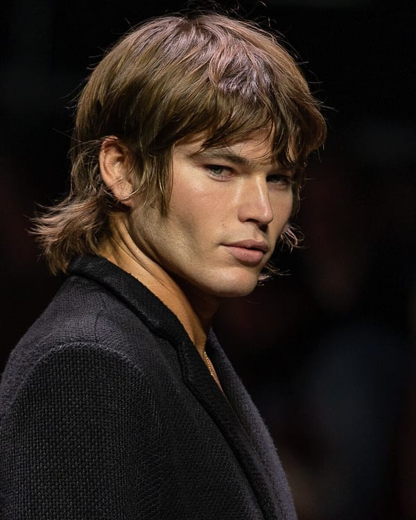
Jordan Barrett 8.8 · model
2022 · CC BY-SA 4.0 · Nordfriisk
File:Jordan-barrett-mbfw-march-2022-fashion-week-berlin.jpg


Michael B. Jordan 8.8 · actor
2025 · CC BY 4.0 · Kevin Paul
File:Michael B Jordan - Sinners (cropped).jpg
-2_(48690780886)_(cropped).jpg "File:TIFF 2019 just mercy (1 of 1)-2 (48690780886) (cropped).jpg")


Jacob Elordi 8.7 · actor
2025 · CC BY 4.0 · JoshPopov
File:JacobElordi-TIFF2025-01 (cropped 2).png
.jpg "File:Jacob Elordi at 82nd Venice International Film Festival-1 (cropped).jpg")
.jpg "File:Jacob Elordi-66121 (cropped).jpg")
_(cropped).jpg "File:Jacob Elordi at the 2024 Toronto International Film Festival (cropped) (cropped).jpg")
.jpg "File:Jacob Elordi at the 2024 Toronto International Film Festival 2 (cropped).jpg")
.png "File:JacobElordi-TIFF2025-01 (cropped).png")
Chris Hemsworth 8.6 · actor
2026 · CC BY 4.0 · Kevin Paul
File:Chris Hemsworth - Crime 101.jpg
.jpg "File:Chris Hemsworth by Gage Skidmore 2 (cropped).jpg")
.jpg "File:Chris Hemsworth SDCC 2014 (cropped).jpg")

.jpg "File:Chris Hemsworth in 2017 by Gage Skidmore (2).jpg")

Chace Crawford 8.5 · actor
2012 · CC BY 3.0 · David Shankbone
File:Chace Crawford 2012 Shankbone 4.JPG
Chris Evans 8.5 · actor
2025 · CC BY-SA 4.0 · Sara Komatsu
File:Chris Evans at the 2025 Toronto International Film Festival (cropped).jpg
.jpg "File:Chris Evans C2E2 2023 1 (cropped).jpg")

.jpg "File:Chris Evans 2020 (cropped).jpg")
.jpg "File:Chris Evans - Captain America 2 press conference (cropped).jpg")

David Beckham 8.5 · athlete
2009 · CC BY-SA 2.0 · The Democratic Alliance
File:David Beckham 2009.jpg
Austin Butler 8.3 · actor
2025 · CC BY-SA 4.0 · Gabriel Hutchinson
File:Austin Butler at the 2025 Cannes Film Festival 02.jpg
.jpg "File:Austin Butler, The Bikeriders, 2024 (cropped).jpg")
.jpg "File:Austin Butler at the 2025 Cannes Film Festival 01 (cropped).jpg")

.jpg "File:Austin Butler (52123912496).jpg")
.jpg "File:Austin Butler (52124413570).jpg")
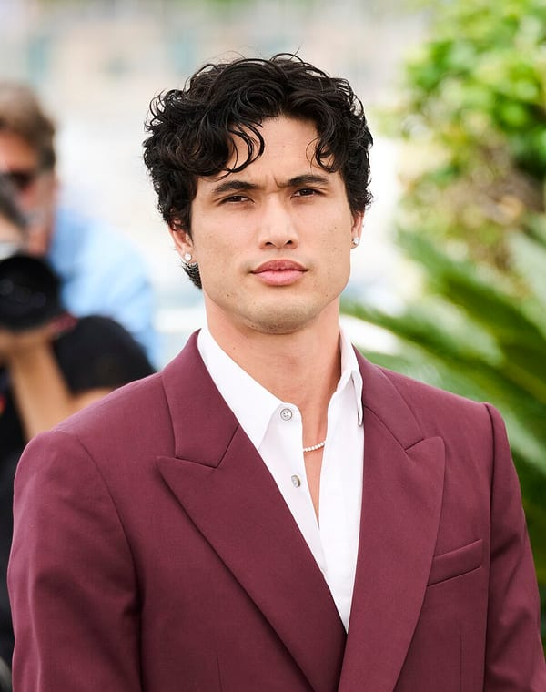
Charles Melton 8.3 · actor
2026 · CC BY-SA 4.0 · Gabriel Hutchinson
File:Charles Melton at the 2026 Cannes Film Festival 02 (cropped).jpg


Ryan Gosling 8.3 · actor
2023 · CC BY 2.0 · Raph_PH
File:GoslingBFI081223 (22 of 30) (53388157347) (cropped).jpg
_(cropped).jpg "File:Ryan Gosling (36201256705) (cropped).jpg")
_(cropped).jpg "File:Ryan Gosling (17056601751) (cropped).jpg")
.jpg "File:Ryan Gosling 2 Cannes 2011 (cropped).jpg")
.jpg "File:Ryan Gosling - Cannes Film Festival - 01 (cropped).jpg")

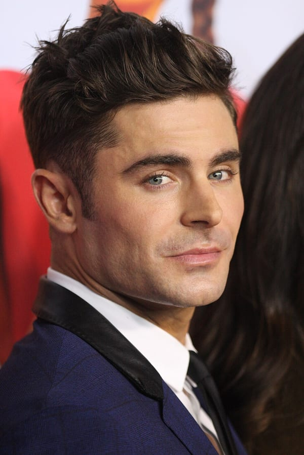
Zac Efron 8.3 · actor · era 2012-2019
2017 · CC BY 2.0 · Eva Rinaldi
File:Zac Efron at the Baywatch Red Carpet Premiere Sydney Australia.jpg
_(cropped).jpg "File:Zac Efron (6914265046) (cropped).jpg")
_(cropped).jpg "File:Zac Efron (6914266402) (cropped).jpg")
_(cropped).jpg "File:Zac Efron (7060185969) (cropped).jpg")
.jpg "File:Zac Efron, 2012 (cropped).jpg")
_(34732926735).jpg "File:Zac Efron, Eva Rinaldi Photography (10) (34732926735).jpg")
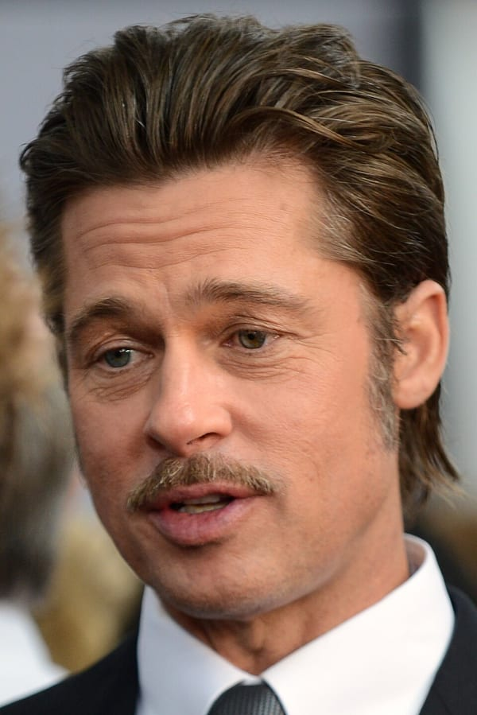
Brad Pitt 8.2 · actor · era 2005-2016
2014 · CC BY 2.0 · DoD News Features
File:Brad Pitt in 2014 (cropped).jpg
.jpg "File:Brad Pitt June 2014 (cropped).jpg")

_(cropped).jpg "File:War Machine Japan Premiere Red Carpet- Brad Pitt (38338138066) (cropped).jpg")
_(cropped).jpg "File:War Machine Japan Premiere Red Carpet- Brad Pitt (38338140346) (cropped).jpg")
_(cropped).jpg "File:War Machine Japan Premiere Red Carpet- Brad Pitt (38393313251) (cropped).jpg")
Cha Eun-woo 8.2 · musician
2025 · CC BY 3.0 · K-POPIT 케이팝잇
File:Cha Eun-woo, March 31, 2025.png
.jpg "File:230407 Cha Eun-woo (차은우).jpg")


Cristiano Ronaldo 8.2 · athlete · era 2014-2021
2016 · CC BY-SA 4.0 · Ruben Ortega
File:Cristiano Ronaldo entrenando (crop) (cropped).jpg
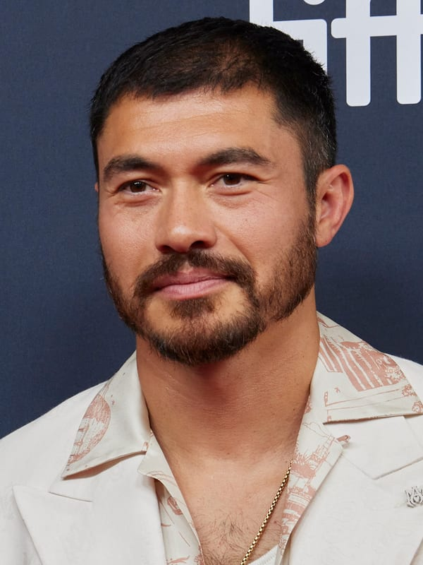
Henry Golding 8.2 · actor
2024 · CC BY-SA 4.0 · Frank Sun
File:Henry Golding at the 2024 Toronto International Film Festival (Cropped).jpg


Jon Hamm 8.2 · actor · era 2008-2017
2014 · CC BY-SA 2.0 · Dominick D
File:Jon Hamm at PaleyFest 2014.jpg


.jpg "File:Jon Hamm at PaleyFest 2014 (light).jpg")
.png "File:Bad Times at the El Royale - Jon Hamm (cropped).png")

Theo James 8.2 · actor
2014 · CC BY-SA 2.0 · Mingle Media TV
File:Theo James March 18, 2014 (cropped).jpg


.jpg "File:WiPe - random -7 (14072220246).jpg")
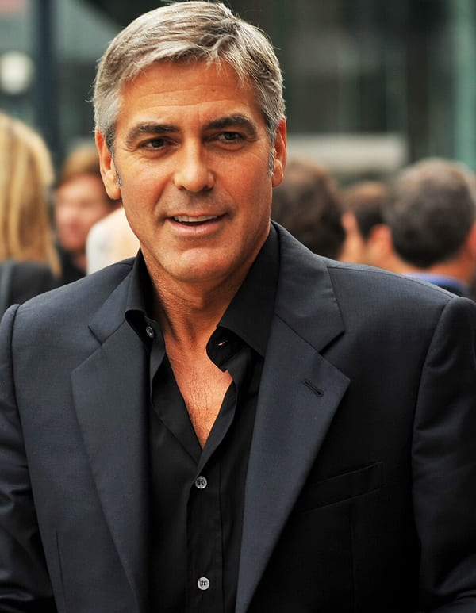
George Clooney 8.0 · actor · era 2005-2014
2009 · CC BY 2.0 · Michael Vlasaty
File:George Clooney-4 The Men Who Stare at Goats TIFF09 (cropped).jpg
_(1).jpg "File:Flickr - nicogenin - George Clooney 66ème Festival de Venise (Mostra) (1).jpg")

.jpg "File:GeorgeClooneyHWoFJan12 (headshot).jpg")
_3.jpg "File:George Clooney 66ème Festival de Venise (Mostra) 3.jpg")
_7.jpg "File:George Clooney 66ème Festival de Venise (Mostra) 7.jpg")
Ian Somerhalder 8.0 · actor
2013 · CC BY 2.0 · vagueonthehow from Tadcaster, York, England
File:Ian Somerhalder (9116302091) (cropped).jpg
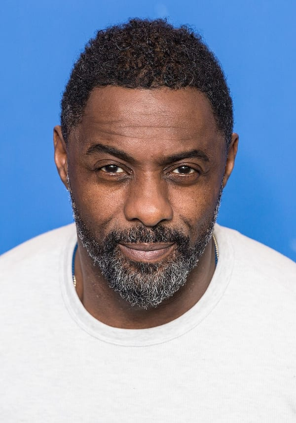
Idris Elba 8.0 · actor
2018 · CC BY-SA 4.0 · Harald Krichel
File:Idris Elba-4580 (cropped).jpg
.jpg "File:Idris Elba A House of Dynamite-21 (cropped).jpg")
.jpg "File:Idris Elba-4764 (cropped).jpg")
.jpg "File:Idris Elba-4816 (cropped).jpg")
.jpg "File:Idris Elba-4822 (cropped).jpg")
.jpg "File:Idris Elba-5272 (cropped).jpg")
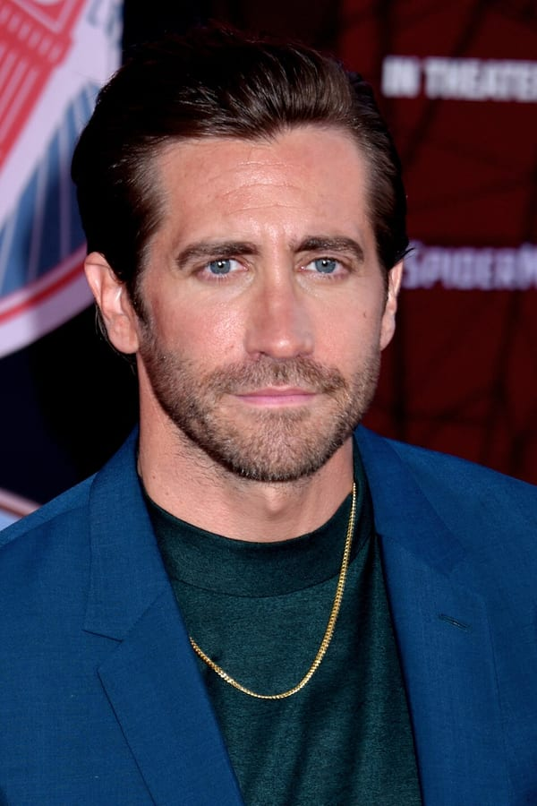
Jake Gyllenhaal 8.0 · actor
2019 · CC BY-SA 4.0 · Toglenn
File:Jake Gyllenhaal 2019 by Glenn Francis.jpg


.jpg "File:Jake Gyllenhaal (9714519720).jpg")
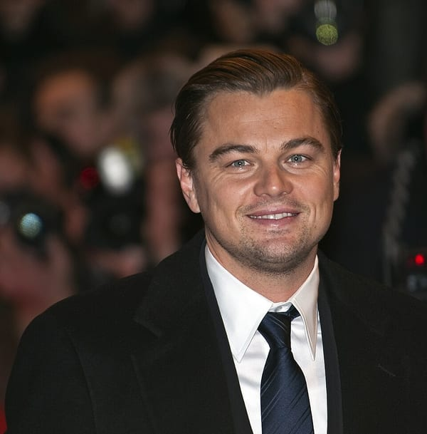
Leonardo DiCaprio 8.0 · actor · era 2008-2016
2010 · CC BY-SA 3.0 · Thore Siebrands
File:Leonardo DiCaprio crop.jpg


.jpg "File:Lasse Hallström at 2013 MIFF (cropped).jpg")

Lucky Blue Smith 8.0 · model
2019 · CC BY 3.0 · Yoann Lothaire / other viewnewsmedia
File:Lucky blue smith 2019 2.jpg


Zayn Malik 8.0 · musician
2015 · CC BY-SA 3.0 · First Access Entertainment
File:Zayn Wiki (cropped).jpg
.jpg "File:Zayn Wiki (cropped 2).jpg")


.jpg "File:Karen Green with husband Najee & Usher (cropped).jpg")

Chris Pine 7.9 · actor
2026 · CC BY-SA 4.0 · Colleen Sturtevant
File:Chris Pine (Cropped).jpg
.jpg "File:Chris Pine at the 2018 Comic-Con International (cropped).jpg")
.jpg "File:Chris Pine at the 2018 Comic-Con International 2 (cropped 02).jpg")
_(cropped).jpg "File:Chris Pine (43043463084) (cropped).jpg")
.jpg "File:Chris Pine & Gal Gadot at the 2018 Comic-Con International (cropped).jpg")

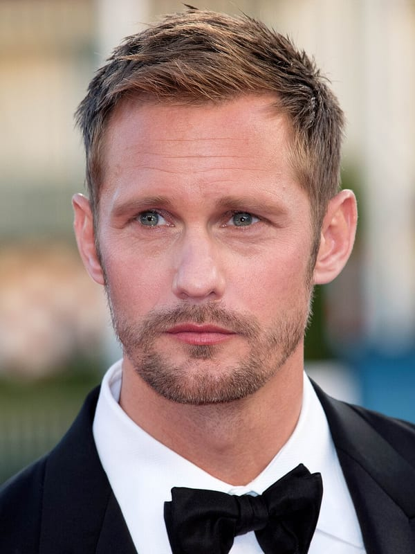
Alexander Skarsgård 7.8 · actor
2025 · CC BY-SA 4.0 · Veggiegalaxy
File:Alexander Skarsgård at NYFF 2025 04 (cropped).jpg
_(cropped).jpg "File:Alexander Skarsgard (29485267411) (cropped).jpg")
.jpg "File:Alexander Skarsgård at NYFF 2025 02 (cropped).jpg")


Chase Stokes 7.8 · actor
Nicholas Galitzine 7.8 · actor
2020 · CC BY-SA 4.0 · Dulce Osuna
File:Nicholas Galitzine on Dulce Osuna.jpg
Tom Blyth 7.8 · actor
2026 · CC BY-SA 4.0 · PhilipRomano
File:TomBlyth-byPhilipRomano.jpg


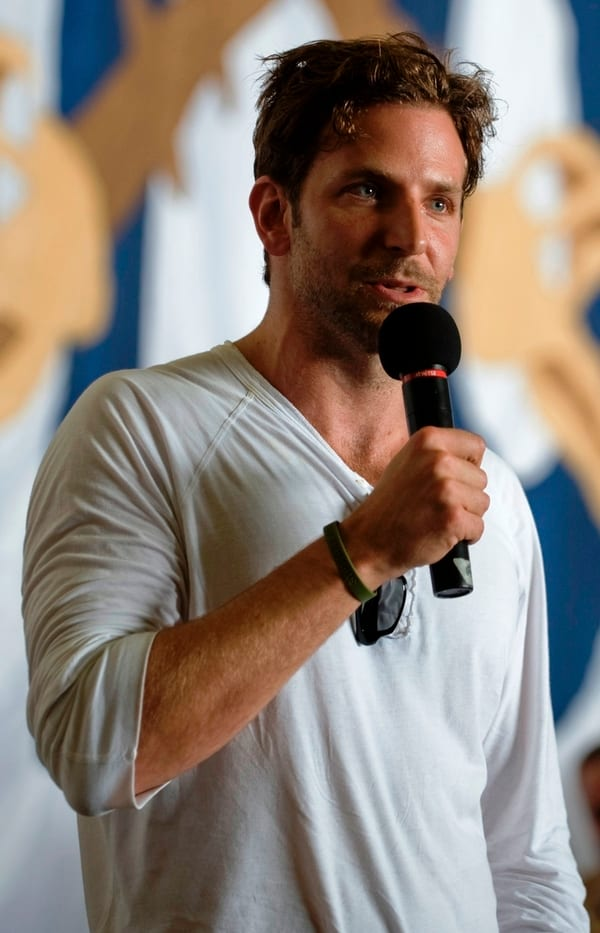
Bradley Cooper 7.7 · actor
2025 · CC BY-SA 4.0 · Bryan Berlin
File:Bradley Cooper Is This Thing On-41 (cropped).jpg
_(cropped).jpg "File:Bradley Cooper (29670050807) (cropped).jpg")
_(cropped)_(cropped).jpg "File:Bradley Cooper (29670050807) (cropped) (cropped).jpg")
_(cropped_2).jpg "File:Bradley Cooper (29670050807) (cropped 2).jpg")
.jpg "File:Bradley Cooper 2023 (cropped).jpg")

Jamie Dornan 7.6 · actor
2023 · CC BY 3.0 · Dublin International Film Festival
File:Jamie Dornan in 2016.png
.jpg "File:Jamie Dornan 2013 (cropped).jpg")


Robert Pattinson 7.6 · actor
2026 · CC BY-SA 4.0 · Colleen Sturtevant
File:Robert Pattinson Venice Film Festival (cropped).jpg
_(cropped).jpg "File:MJK 08789 Robert Pattinson (Damsel, Berlinale 2018) (cropped).jpg")


Ryan Reynolds 7.6 · actor
2018 · CC BY 2.0 · Dick Thomas Johnson from Tokyo, Japan
File:Deadpool 2 Japan Premiere Red Carpet Ryan Reynolds (cropped).jpg
.jpg "File:Deadpool 2 Japan Premiere Red Carpet Ryan Reynolds (cropped 2).jpg")
.jpg "File:Ryan Reynolds at the 2025 Toronto International Film Festival (cropped).jpg")
.jpg "File:Ryan Reynolds 2014 TIFF The Voices Premiere (cropped).jpg")
.jpg "File:Deadpool 2 Japan Premiere Red Carpet Ryan Reynolds (40649016430).jpg")

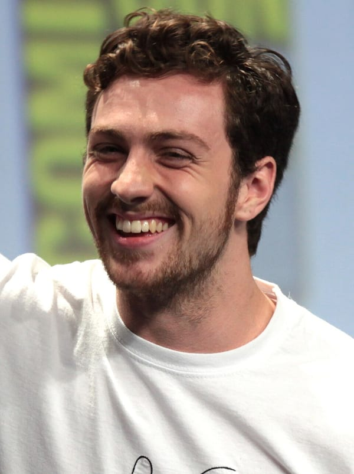
Aaron Taylor-Johnson 7.5 · actor
2014 · CC BY-SA 2.0 · Gage Skidmore
File:Aaron Taylor-Johnson SDCC 2014 01.jpg
Channing Tatum 7.5 · actor
2017 · CC BY-SA 2.0 · Gage Skidmore from Peoria, AZ, United States of America
File:Channing Tatum (35732523270) (cropped).jpg

.jpg "File:Channing Tatum by David Shankbone (cropped).jpg")


.jpg "File:Channing Tatum (54462839624).jpg")
Glen Powell 7.5 · actor
2025 · CC BY-SA 4.0 · Jennifer 8. Lee
File:Glen Powell at CinemaCon 2025 06 (cropped).jpg

_(cropped).png "File:Glen Powell interview by Toby Knapp (2) (cropped).png")
.jpg "File:Glen Powell (cropped).jpg")
.jpg "File:Glen Powell Walking CinemaCon 2025 01 (cropped).jpg")

Cole Sprouse 7.4 · actor
2026 · CC BY-SA 4.0 · Casey "Poppins" Nedelka
File:Cole Sprouse Tribeca 2026 4.jpg
_(cropped).jpg "File:Cole Sprouse (48478678751) (cropped).jpg")


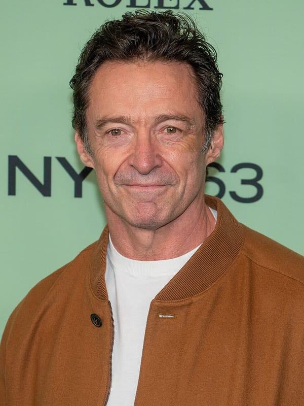
Hugh Jackman 7.4 · actor · era 2008-2017
2025 · CC BY-SA 4.0 · Bryan Berlin
File:Hugh Jackman Is This Thing On-68 (cropped).jpg


_(rotated).jpg "File:Logan Japan Premiere Red Carpet- Hugh Jackman (38445328406) (rotated).jpg")

KJ Apa 7.4 · actor
2018 · CC BY 2.0 · John Bauld from Toronto, Canada
File:K.J. Apa (44563642331) (cropped 2).jpg
_(cropped).jpg "File:KJ Apa (48478822917) (cropped).jpg")
_(cropped).jpg "File:KJ Apa (48478684051) (cropped).jpg")


Louis Partridge 7.4 · actor
2025 · CC BY 4.0 · Raph_PH
File:Louis Partridge.jpg
.jpg "File:Actor Louis Partridge at 81st Venice International Film Festival 2 (cropped).jpg")
_(54062030786)_(cropped).jpg "File:DisclaimerBFILFF101024 (8 of 113) (54062030786) (cropped).jpg")


Richard Madden 7.4 · actor
2019 · CC BY-SA 2.0 · Gage Skidmore from Peoria, AZ, United States of America
File:Richard Madden (48462874707) (cropped).jpg
.jpg "File:Richard Madden in 2019 (cropped).jpg")
1.jpg "File:Richard Madden in 2019 (cropped)1.jpg")


_(cropped).jpg "File:Richard Madden (9347941807) (cropped).jpg")
Sebastian Stan 7.4 · actor
2019 · CC BY-SA 3.0 · Gage Skidmore
File:Sebastian Stan by Gage Skidmore 2 (cropped).jpg

_(cropped).jpg "File:'The Martian' World Premiere (NHQ201509110007) (cropped).jpg")


.jpg "File:MKr354324 Sebastian Stan (Bester Darsteller, Berlinale 2024).jpg")
V (BTS) 7.4 · musician
2025 · CC BY 3.0 · 티비텐
File:BTS's V 20251004 04.jpg
_Dispatch_Photo_Shoot_LA_(3)_(cropped).png "File:1117 V (BTS) Dispatch Photo Shoot LA (3) (cropped).png")

.jpg "File:220624 방탄소년단 뷔(2).jpg")


Callum Turner 7.3 · actor
2026 · CC BY-SA 4.0 · Harald Krichel
File:Callum Turner-69856 (cropped).jpg
.jpg "File:Callum Turner at 82nd Venice International Film Festival-3 (cropped).jpg")


Drew Starkey 7.3 · actor
2023 · CC0 · Itsyaara
File:Drew Starkey.jpg
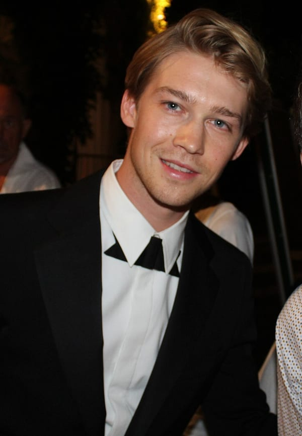
Joe Alwyn 7.3 · actor
2024 · CC0 · H7ndrx
File:Joseph Alwyn.jpg
_(cropped).jpg "File:Joe Alwyn at the 2022 TIFF Premiere of Catherine Called Birdy (52358881656) (cropped).jpg")

.jpg "File:Joe Alwyn at the 2022 TIFF Premiere of Catherine Called Birdy (52359300575).jpg")


Kit Harington 7.3 · actor
2013 · CC BY-SA 2.0 · Gage Skidmore
File:Kit Harington SDCC 2013 (cropped).jpg
_(cropped).jpg "File:Kit Harington (9345018523) (cropped).jpg")
_(cropped).jpg "File:Kit Harington at HBOs \"Game Of Thrones\" Season 3 Seattle Premiere at Cinerama (8579815116) (cropped).jpg")
.jpg "File:Kit harrington by sachyn mital (cropped).jpg")

.jpg "File:Kit Harington (9345018523).jpg")
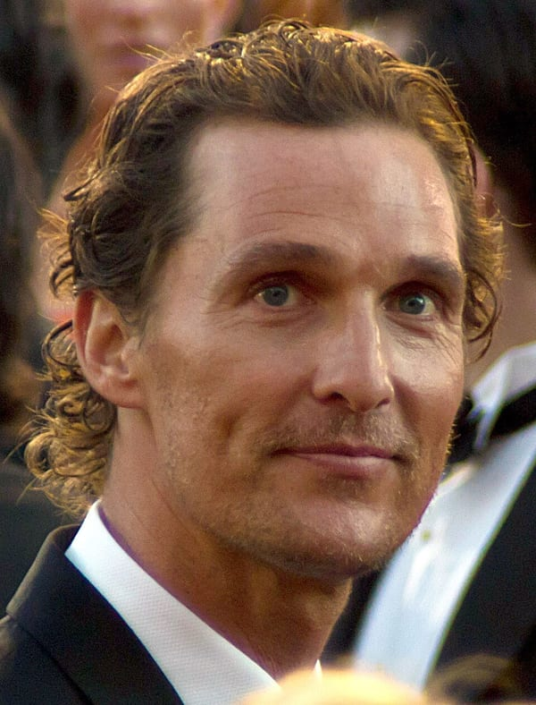
Matthew McConaughey 7.3 · actor · era 2010-2018
2011 · CC BY-SA 3.0 · David Torcivia at https://www.flickr.com/photos/viatorci/
File:Matthew McConaughey 2011.jpg

_(cropped).jpg "File:Matthew McConaughey 2019 (48648344772) (cropped).jpg")
.jpg "File:Matthew McConaughey at the 2025 Toronto Film Festival (3x4 cropped).jpg")


Noah Centineo 7.3 · actor
2026 · CC BY-SA 4.0 · Gage Skidmore from Surprise, AZ, United States of America
File:Noah Centineo (55230816636).jpg
Charlie Hunnam 7.2 · actor
2024 · CC BY 2.0 · Pedro Heshike for Galaxy Con
File:Charlie Hunnam (53619946303).jpg

.jpg "File:Charlie Hunnam by Gage Skidmore 3 (cropped).jpg")


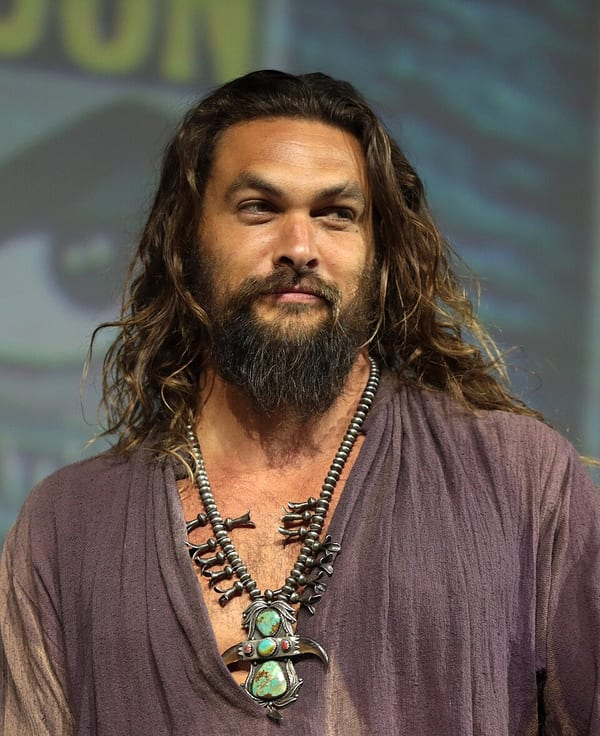
Jason Momoa 7.2 · actor
2018 · CC BY-SA 2.0 · Gage Skidmore from Peoria, AZ, United States of America
File:Jason Momoa (43055621224) (cropped).jpg


.jpg "File:Jason Momoa, Aquaman (45655623114).jpg")
.jpg "File:Jason Momoa Aquaman, Sydney, Australia, 19th Dec, 2018 (31439340507).jpg")

Josh Hartnett 7.2 · actor
2026 · CC BY-SA 4.0 · JoshPopov
File:TIFF-2026-BELOW-JOSH-HARTNETT-02.png

.png "File:Josh Hartnett at TIFF (crop).png")


.jpg "File:Josh Hartnett (5443943486).jpg")
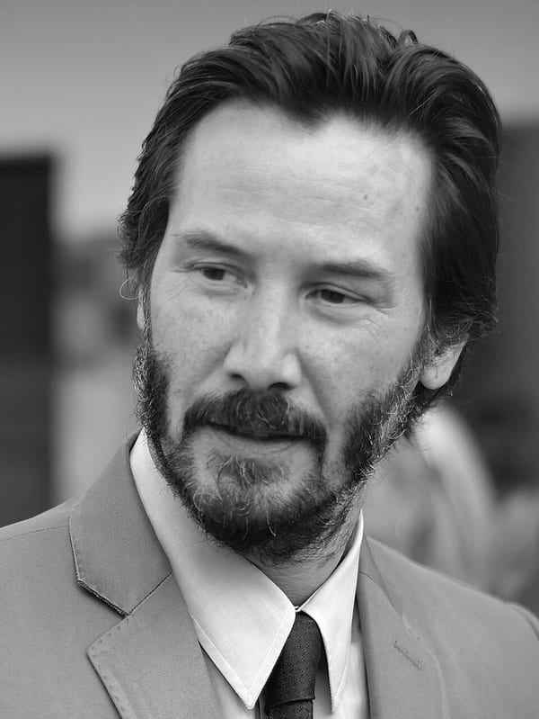
Keanu Reeves 7.2 · actor · era 2005-2017
2015 · CC BY-SA 4.0 · Marybel Le Pape
File:Keanu Reeves (crop and levels) (cropped).jpg
.jpg "File:Keanu Reeves at TIFF 2025 02 (Cropped).jpg")

_2.jpg "File:Keanu Reeves (Berlin Film Festival 2009) 2.jpg")
.jpg "File:Keanu Reeves (10614620175).jpg")

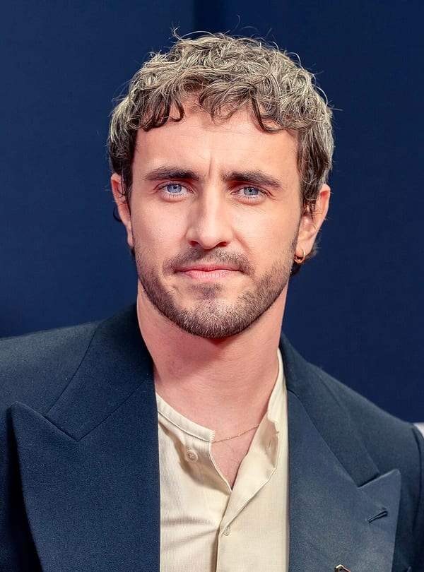
Paul Mescal 7.2 · actor
2025 · CC BY-SA 4.0 · Jay Dixit
File:Paul Mescal at the Toronto International Film Festival in 2025 2 (cropped 2).jpg
.jpg "File:Paul Mescal at the Toronto International Film Festival in 2025 2 (cropped).jpg")
_(cropped).jpg "File:HamnetBFILFF111025-60 (54852266835) (cropped).jpg")
_(cropped).jpg "File:HamnetBFILFF111025-20 (54852202114) (cropped).jpg")


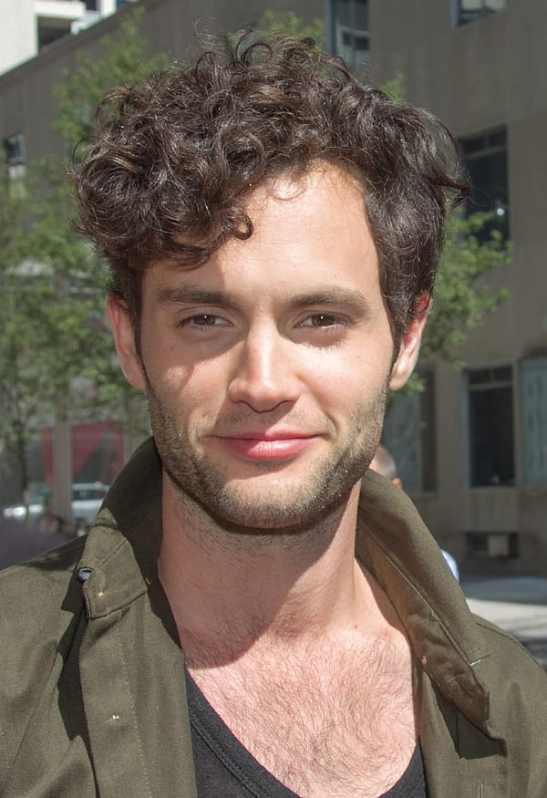
Penn Badgley 7.2 · actor
2012 · CC BY-SA 2.0 · Gordon Correll
File:Penn Badgley TIFF 2012.jpg


Tom Cruise 7.2 · actor · era 2008-2018
2008 · CC BY-SA 3.0 · MTV Live at http://www.mtv.ca/live
File:TomCruiseDec08MTV cropped.jpg

.jpg "File:Tom Cruise (34450661310).jpg")
.jpg "File:Tom Cruise (34797286226).jpg")
.jpg "File:Tom Cruise (34450685720).jpg")
_(cropped).jpg "File:Tom Cruise (48364137131) (cropped).jpg")
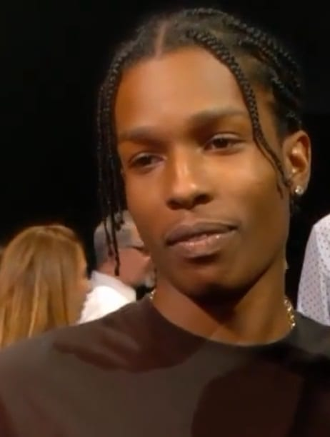
A$AP Rocky 7.1 · musician
2015 · CC BY 3.0 · Marisa Barone
File:ASAP Rocky VMA 2015.jpg
Andrew Garfield 7.1 · actor
2025 · CC BY-SA 4.0 · Colleen Sturtevant
File:Andrew Garfield 82nd Venice Film Festival (cropped).jpg
Dylan O'Brien 7.1 · actor
2026 · CC BY-SA 4.0 · Sarran Hamilton
File:Dylan O'Brien at TIFF 2026-35 (cropped).jpg
.jpg "File:2025 Dylan O'Brien (cropped).jpg")
.jpg "File:Dylan O'Brien 2014 (cropped).jpg")
.jpg "File:Dylan O'Brien 2014 Comic Con (cropped).jpg")


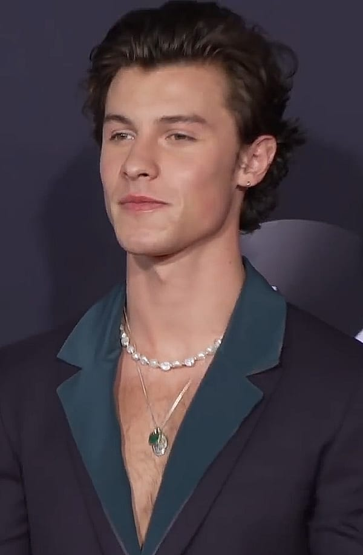
Shawn Mendes 7.1 · musician
2019 · CC BY 3.0 · Cosmopolitan UK
File:191125 Shawn Mendes at the 2019 American Music Awards.png
.jpg "File:Shawn Mendes at The Queen's Birthday Party (cropped 2).jpg")
.jpg "File:Shawn Mendes live in concert (cropped).jpg")
_(cropped).jpg "File:QueenbdayRAH210418-28 (26886325387) (cropped).jpg")
_(cropped).jpg "File:QueenbdayRAH210418-26 (26886330387) (cropped).jpg")
_(cropped).jpg "File:QueenbdayRAH210418-25 (27885303238) (cropped).jpg")
Dacre Montgomery 7.0 · actor
2017 · CC BY-SA 3.0 · Gage Skidmore
File:Dacre Montgomery by Gage Skidmore.jpg

.jpg "File:Dean Israelite (cropped).jpg")
.jpg "File:Dacre Montgomery (53974329659).jpg")

_(cropped).jpg "File:Natalia Dyer, Dacre Montgomery, Caleb McLaughlin & Sadie Sink (36046753432) (cropped).jpg")
Harris Dickinson 7.0 · actor
2025 · CC BY-SA 4.0 · John Sears
File:Harris Dickinson at 2025 Telluride Film Festival (cropped).jpg
.jpg "File:Harris Dickinson (cropped).jpg")
.jpg "File:Harris Dickinson (cropped 2).jpg")
.jpg "File:Harris Dickinson (cropped 3).jpg")
_B.png "File:Harris Dickinson (2025) B.png")
_(53121548320)_(cropped).jpg "File:ScrapperBFI150823 (7 of 7) (53121548320) (cropped).jpg")
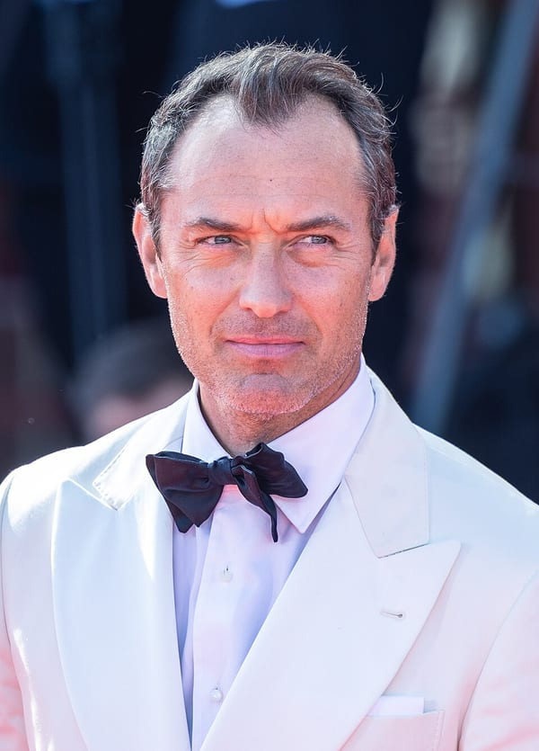
Jude Law 7.0 · actor
2025 · CC BY-SA 4.0 · Harald Krichel
File:Jude Law-7806 (cropped).jpg

_(cropped).jpg "File:Jude Law (43002019704) (cropped).jpg")
_(cropped).jpg "File:Jude Law (42814357185) (cropped).jpg")
.jpg "File:Jude Law-67896 (cropped).jpg")
.jpg "File:Jude Law at the 2024 Toronto International Film Festival 02 (cropped).jpg")
Matt Rife 7.0 · comedian
2021 · CC BY 3.0 · OVERNIGHT
File:Matt Rife, 2021.jpg
Paul Wesley 7.0 · actor
2025 · CC BY-SA 3.0 · Gage Skidmore
File:Paul Wesley by Gage Skidmore 5.jpg

_(cropped).jpg "File:Paul Wesley (7604968396) (cropped).jpg")


Rauw Alejandro 7.0 · musician
Ross Lynch 7.0 · musician
2018 · CC BY 3.0 · MTV International
File:Ross Lynch 2 (cropped).png
_(cropped).jpg "File:Ross Lynch (8591147569) (cropped).jpg")
_(cropped).jpg "File:Ross Lynch (8591148405) (cropped).jpg")
_(cropped).jpg "File:Ross Lynch (8268275594) (cropped).jpg")
_(cropped).jpg "File:R5 f. Ross Lynch 11 09 2013 -18 (10789251554) (cropped).jpg")
_(cropped).jpg "File:Ross Lynch (11834465594) (cropped).jpg")
Timothée Chalamet 7.0 · actor
2025 · CC BY-SA 4.0 · Harald Krichel
File:Timothée Chalamet-63482 (cropped).jpg
.jpg "File:Timothée Chalamet-63541 (cropped).jpg")
.jpg "File:Timothée Chalamet in 2018 (cropped).jpg")
.jpg "File:Timothée Chalamet Call Me By Your Name Press Conference Berlinale 2017 (cropped).jpg")
.jpg "File:Timothée Chalamet-63815b (cropped).jpg")

Tom Hardy 7.0 · actor
2018 · CC BY-SA 2.0 · Gage Skidmore from Peoria, AZ, United States of America
File:Tom Hardy (41869508740) (cropped).jpg


.jpg "File:TomHardyJuly10 (cropped).jpg")

Tom Holland 7.0 · actor
2026 · CC BY-SA 4.0 · PhilipRomano
File:TomHolland-byPhilipRomano.jpg
.jpg "File:Tom Holland Bali 2019 1 (cropped).jpg")
.jpg "File:Tom Holland during pro-am Wentworth golf club 2023-2 (cropped).jpg")
_(cropped).jpg "File:Tom Holland Bali 2019 1 (cropped) (cropped).jpg")
.jpg "File:TomHolland-byPhilipRomano7 (cropped).jpg")

Christian Bale 6.9 · actor
2019 · CC BY-SA 4.0 · Harald Krichel
File:Christian Bale-7837.jpg
_(cropped).jpg "File:MJK 36327 Christian Bale (Vice, Berlinale 2019) (cropped).jpg")
.jpg "File:Christian Bale 2014 (cropped).jpg")


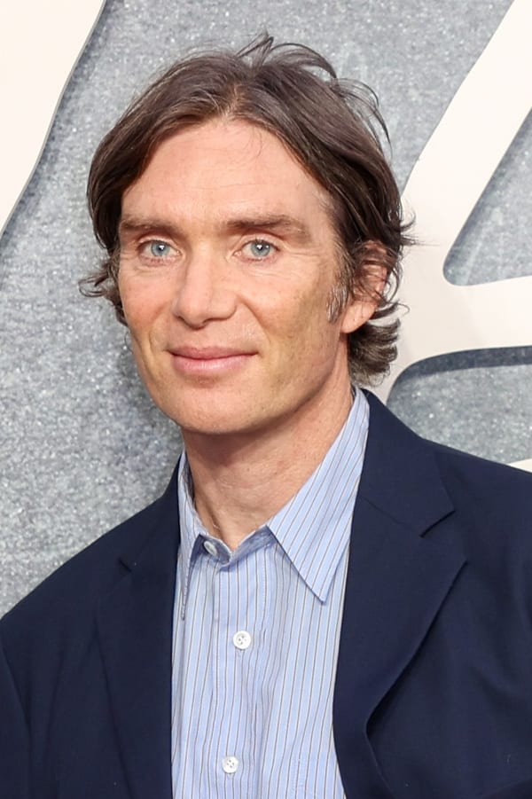
Cillian Murphy 6.9 · actor
2025 · CC BY-SA 4.0 · Netflix
File:Cillian Murphy at the London premier of Steve in September 2025 (cropped).jpg
.png "File:CillianMurphy-TIFF2025-01-Cropped (cropped).png")
.jpg "File:Cillian Murphy Press Conference The Party Berlinale 2017 02 (cropped).jpg")
.jpg "File:Cillian Murphy at the London premier of Steve in September 2025 (cropped 2).jpg")


Dev Patel 6.9 · actor
2024 · CC BY-SA 4.0 · Ariela Ortiz Barrantes
File:SXSW 2024 - Dev Patel 4 (cropped).jpg
.jpg "File:Dev Patel (29870651654).jpg")
.jpg "File:SXSW 2024 - Dev Patel 2 (cropped).jpg")
.jpg "File:SXSW 2024 - Dev Patel 3 (cropped-J1).jpg")
.jpg "File:SXSW 2024 - Dev Patel 2 (cropped-J1).jpg")

Jensen Ackles 6.9 · actor
2026 · CC BY 4.0 · Mandilea16
File:Jensen Ackles at Creation Entertainment in Orlando 2026-2.jpg
_(cropped).jpg "File:Jensen Ackles (48478244212) (cropped).jpg")
_(cropped).jpg "File:Misha Collins & Jensen Ackles (48478258422) (cropped).jpg")
_(cropped)_3.jpg "File:Chace Crawford, Jessie Usher & Jensen Ackles (51958530351) (cropped) 3.jpg")


Rudy Pankow 6.9 · actor
2019 · CC BY-SA 4.0 · לא יודעת
File:Rudy pankow.jpg
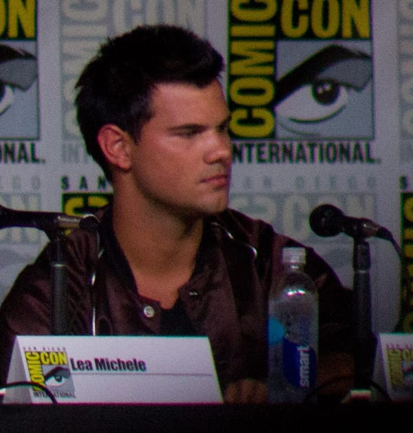
Taylor Lautner 6.9 · actor
2016 · CC BY 2.0 · https://www.flickr.com/photos/vagueonthehow/
File:Taylor Lautner SDCC 2016 3 (cropped).jpg


.jpg "File:Taylor Lautner (6072585915).jpg")
Tom Hiddleston 6.9 · actor
2024 · CC BY-SA 4.0 · Kevin Payravi
File:Tom Hiddleston at the 2024 Toronto International Film Festival (cropped).jpg
_(cropped).jpg "File:Tom Hiddleston (36109110291) (cropped).jpg")
_(cropped).jpg "File:Tom Hiddleston (27992938324) (cropped).jpg")
_cropped.jpg "File:Tom Hiddleston (48468962561) cropped.jpg")
_(cropped).jpg "File:Tom Hiddleston (48468962561) (cropped).jpg")

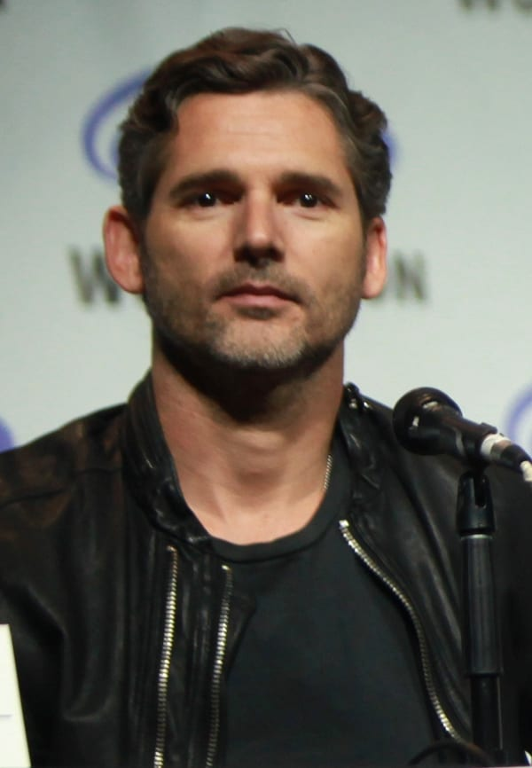
Eric Bana 6.8 · actor
2014 · CC BY 2.0 · Gage Skidmore
File:Eric Bana 2014 WonderCon (cropped).jpg


Jonathan Bailey 6.8 · actor
2024 · CC BY 4.0 · Barbie Simons
File:Jonathan Bailey press for Wicked.png
Kit Connor 6.8 · actor
2026 · CC BY-SA 4.0 · Amy Hecht
File:Kit Connor at the 2026 New York Film Festival.jpg


.jpg "File:Kit Connor at the 2026 New York Film Festival (1).jpg")
Michael Fassbender 6.8 · actor
2016 · CC BY-SA 2.0 · Gordon Correll
File:Michael Fassbender (25882726425).jpg
Nick Jonas 6.8 · musician
2026 · CC BY 3.0 · Dublin International Film Festival
File:Nick Jonas at DIFF 2026.jpg
_(cropped).jpg "File:Nick Jonas - Kingdom Premiere Oct 2014 (cropped) (cropped).jpg")
.jpg "File:Nick Jonas, Joanna Going, Matt Lauria, Frank Grillo, Jonathan Tucker - Kingdom Premiere Oct 2014 (cropped).jpg")


Chris Pratt 6.7 · actor
2018 · CC BY 2.0 · Dick Thomas Johnson from Tokyo, Japan
File:Chris Pratt Jurassic World Fallen Kingdom Japan Premiere Red Carpet (3x4 cropped).jpg
_(cropped).jpg "File:Chris Pratt (28046022544) (cropped).jpg")
_(cropped).jpg "File:Chris Pratt (28556109022) (cropped).jpg")
_(cropped).jpg "File:Chris Pratt (28046106184) (cropped).jpg")
_(cropped).jpg "File:Chris Pratt (28046276644) (cropped).jpg")
_(cropped).jpg "File:Chris Pratt (28045470154) (cropped).jpg")
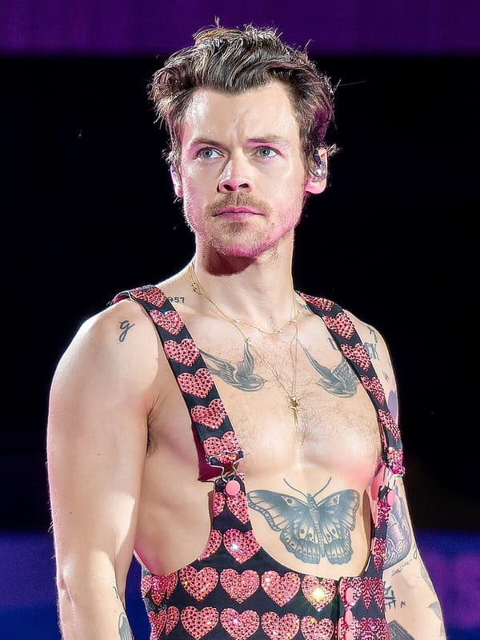
Harry Styles 6.7 · musician
2023 · CC BY 2.0 · Raph_PH
File:HarryStylesWembley170623 (65 of 93) (52982678051) (cropped 2).jpg
_(52982076132)_(cropped).jpg "File:HarryStylesWembley170623 (14 of 93) (52982076132) (cropped).jpg")
_(cropped).jpg "File:Harry Styles - Love On Tour @ Jeunesse Arena (52555729295) (cropped).jpg")
.jpg "File:Dress worn by Styles on Vogue (cropped).jpg")
_(52982076132)_cropped.jpg "File:HarryStylesWembley170623 (14 of 93) (52982076132) cropped.jpg")
.jpg "File:Harry Styles Wembley June 2022 (cropped).jpg")
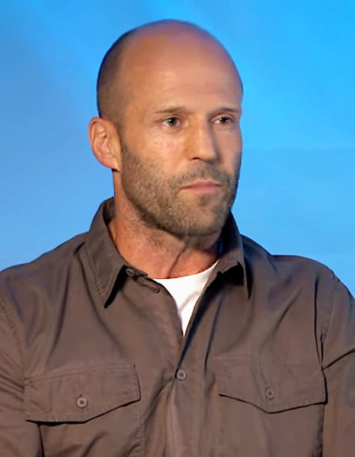
Jason Statham 6.7 · actor
2018 · CC BY 3.0 · MTV International
File:Jason Statham 2018.jpg

.jpg "File:Cannes 2014 4 (cropped).jpg")
.jpg "File:‘LG G5’ TV 광고영상 1500만 뷰 돌파 (26214288681).jpg")


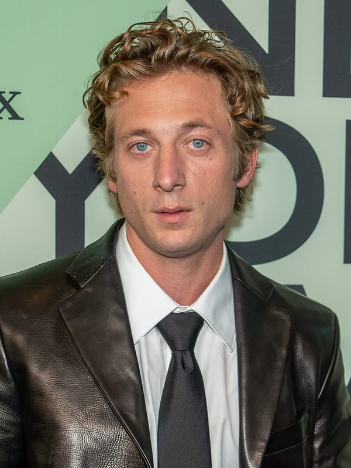
Jeremy Allen White 6.7 · actor
2025 · CC BY-SA 4.0 · Bryan Berlin
File:Jeremy Allen White Springsteen-33 (cropped).jpg
.jpg "File:Scott Cooper Jeremy Allen White Springsteen-38 (cropped).jpg")


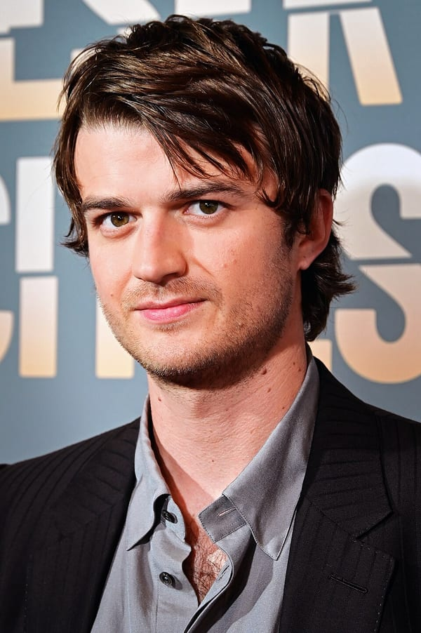
Joe Keery 6.7 · actor
2026 · CC BY-SA 4.0 · PhilipRomano
File:JoeKeery-byPhilipRomano.jpg
_(cropped).jpg "File:Joe Keery (35377968484) (cropped).jpg")
_(cropped).jpg "File:Joe Keery (36078909041) (cropped).jpg")

_(cropped).jpg "File:Joe Keery (35409249603) (cropped).jpg")

Dave Franco 6.6 · actor
2025 · CC BY 4.0 · Everwest
File:Dave Franco at the 2025 Sundance Film Festival (cropped).jpg
.jpg "File:Dave Franco 2016 Comic Con (cropped).jpg")


Jared Leto 6.6 · actor
2025 · CC BY-SA 3.0 · Gage Skidmore
File:Jared Leto by Gage Skidmore 2.jpg
_(cropped).jpg "File:Jared Leto, San Diego Comic Con 2016 (2) (cropped).jpg")
.jpg "File:Jared Leto, San Diego Comic Con 2016 (2).jpg")
_(cropped).jpg "File:Jared Leto (33906700198) (cropped).jpg")


Joe Manganiello 6.6 · actor
2025 · CC BY-SA 3.0 · Gage Skidmore
File:Joe Manganiello by Gage Skidmore 2.jpg
_(cropped).jpg "File:SXSW 2016 - Joe Manganiello (25847570586) (cropped).jpg")
_(cropped).jpg "File:SXSW 2016 - Joe Manganiello (25752717202) (cropped).jpg")
_(cropped).jpg "File:SXSW 2016 - Joe Manganiello (25873507545) (cropped).jpg")
_(cropped).jpg "File:SXSW 2016 - Joe Manganiello (25572929610) (cropped).jpg")

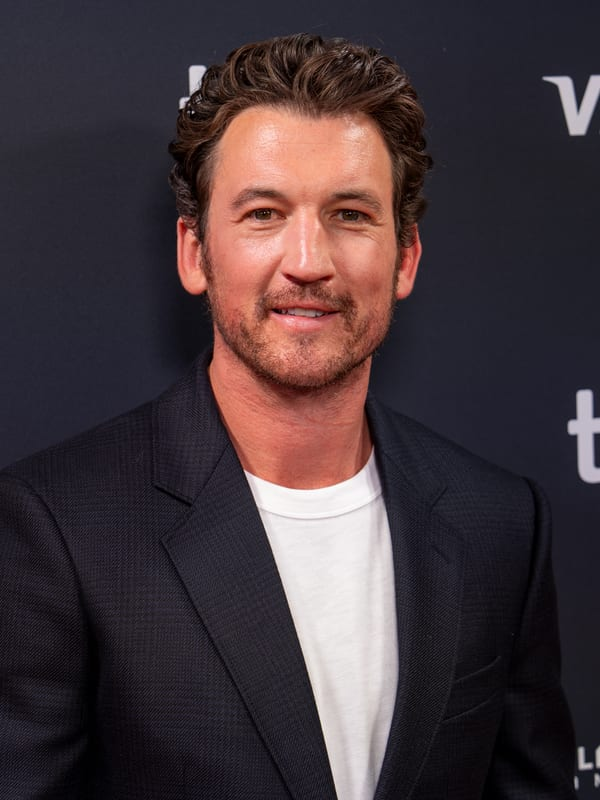
Miles Teller 6.6 · actor
2025 · CC BY 4.0 · JoshPopov
File:Miles Teller TIFF 2025 (3x4 cropped).png
Orlando Bloom 6.6 · actor
2026 · CC BY-SA 4.0 · Harald Krichel
File:Orlando Bloom-9047 (cropped).jpg
.jpg "File:Orlando Bloom at the 2024 Toronto International Film Festival (cropped2).jpg")
_(cropped).jpg "File:UNICEF Youth for Recovery - Orlando Bloom - 045A4280 (52782827426) (cropped).jpg")


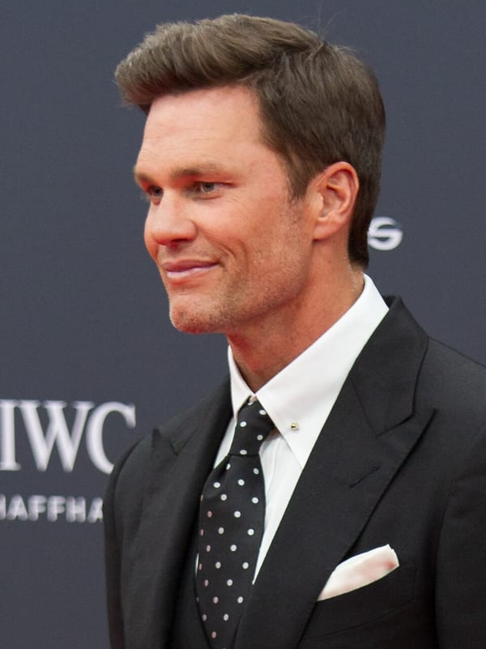
Tom Brady 6.6 · athlete
2024 · CC BY-SA 4.0 · Barcex
File:25th Laureus World Sports Awards - Red Carpet - Tom Brady - 240422 191334 (cropped) (cropped).jpg

.jpg "File:Tom Brady WFT-Buccaneers NOV2021 (cropped).jpg")


Adam Levine 6.5 · musician
2016 · CC BY 2.0 · Justin Higuchi from Los Angeles, CA, USA
File:Maroon 5 11 19 2016 -58 (31101308922) (cropped).jpg
.jpg "File:Adam Levine The Voice VIP Screening (cropped).jpg")
.jpg "File:Adam Levine 2013 August (cropped).jpg")


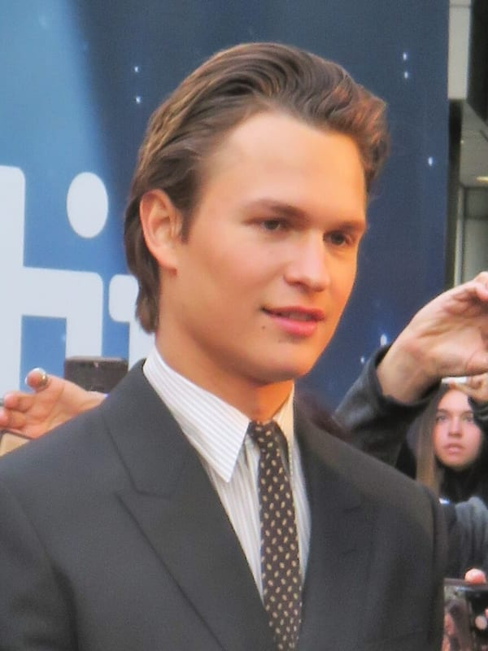
Ansel Elgort 6.5 · actor
2019 · CC BY-SA 2.0 · GabboT
File:Ansel Elgort in 2019.jpg
_(cropped).jpg "File:Ansel Elgort (35706291642) (cropped).jpg")
_(colour_edited).jpg "File:Ansel Elgort (35875410045) (colour edited).jpg")
.jpg "File:Ansel Elgort 2014 Divergent Premiere (cropped).jpg")
.jpg "File:Ansel Elgort 2014 (cropped).jpg")
.jpg "File:Ansel Elgort at an Apple Store in 2014 (cropped).jpg")
Dylan Sprouse 6.5 · actor
2012 · CC BY 3.0 · NYU Local no Vimeo
File:NYU Local chats with Dylan Sprouse 01 (cropped).jpg


Eddie Redmayne 6.5 · actor
2022 · CC BY 2.0 · Montclair Film
File:Eddie Redmayne MFF Portrait.jpg

_Cropped.jpg "File:Eddie Redmayne & Aisha Tyler (43718217081) Cropped.jpg")
_Cropped_2.jpg "File:Eddie Redmayne & Aisha Tyler (43718217081) Cropped 2.jpg")


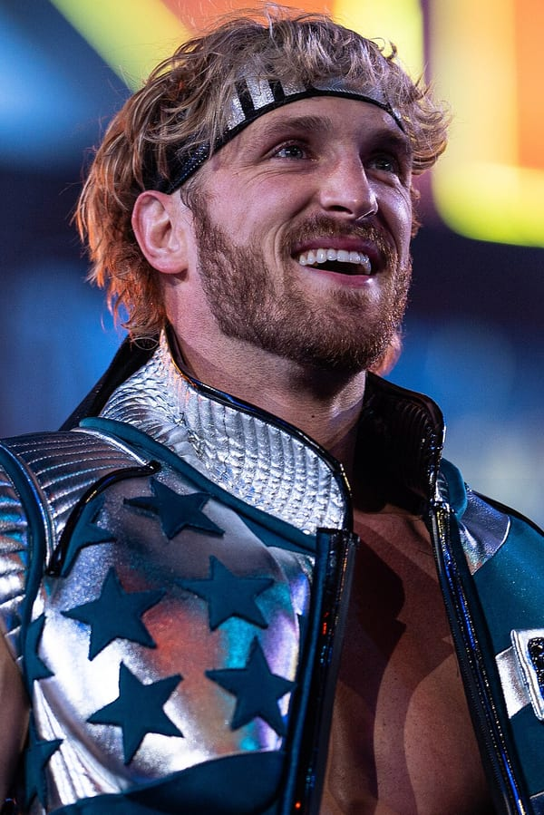
Logan Paul 6.5 · creator
2024 · CC BY 2.0 · diegofernandophotography
File:Logan Paul, WrestleMania XL in 2024 1 (cropped) (cropped).jpg
Nick Robinson 6.5 · actor
2018 · CC BY 3.0 · MTV International
File:Nick Robinson interview 2018 left.jpg
_(cropped).jpg "File:Nick Robinson Interview - Love, Simon (2) (cropped).jpg")

.jpg "File:Nick Robinson (23949120031).jpg")
_(2).jpg "File:Nick Robinson (23949120031) (2).jpg")

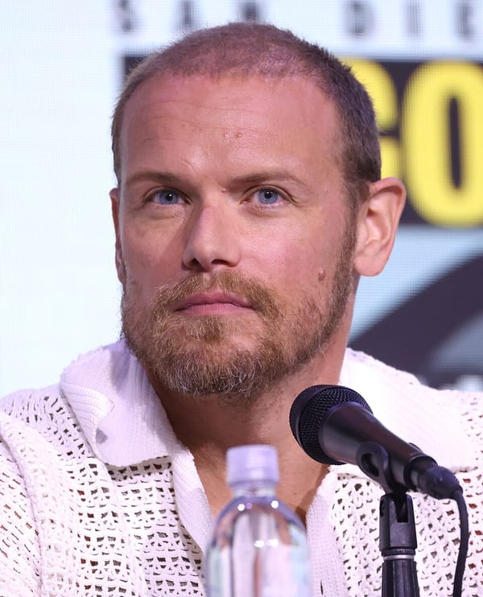
Sam Heughan 6.5 · actor
2025 · CC BY-SA 3.0 · Gage Skidmore
File:Sam Heughan by Gage Skidmore 2.jpg
.jpg "File:SDCC 2015 - Sam Heughan (19678105735).jpg")
.jpg "File:Outlander premiere episode screening at 92nd Street Y in New York 08 (crop).jpg")

.jpg "File:SDCC 2015 - Sam Heughan (19671146712).jpg")
.jpg "File:SDCC 2015 - Brave New Warriors panel (19490060320).jpg")
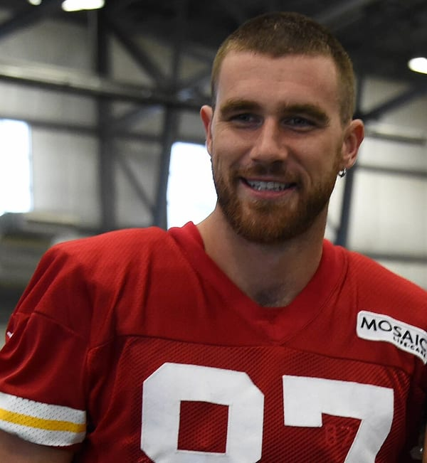
Travis Kelce 6.5 · athlete
2017 · Public domain · U.S. Air Force Master Sgt. April Wickes
File:Travis kelce 2017 training camp (cropped).jpg
Alex Turner 6.4 · musician
2015 · CC BY 2.0 · Cary Whitt
File:Alex Turner At CD102.5 Big Room - CROPPED.jpg


.jpg "File:Alex Turner Arctic Monkeys Lollapalooza 2009 (cropped).jpg")


Archie Madekwe 6.4 · actor
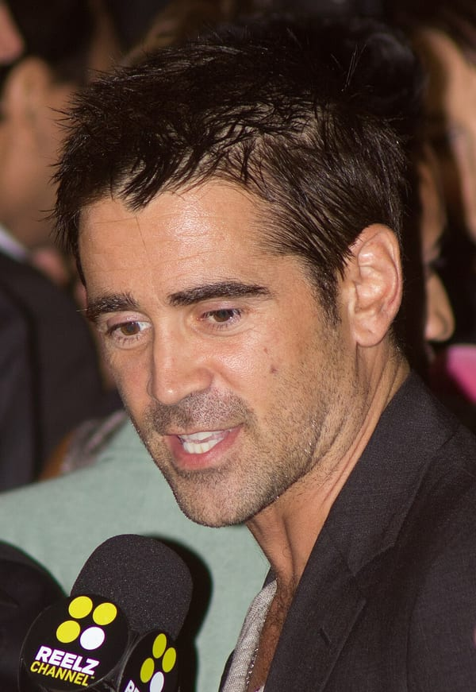
Colin Farrell 6.4 · actor
2025 · CC BY 4.0 · Quejaytee
File:2025 Colin Farrell - 2 (cropped).jpg
_(52447275762)_(cropped).jpg "File:BansheesBFI131022 (21 of 22) (52447275762) (cropped).jpg")
_(52448072829)_(cropped).jpg "File:BansheesBFI131022 (5 of 22) (52448072829) (cropped).jpg")


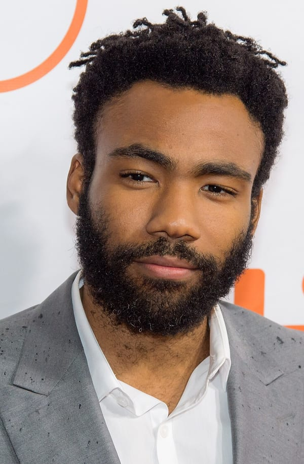
Donald Glover 6.4 · actor
2015 · Public domain · Bill Ingalls
File:Donald Glover TIFF 2015 (cropped).jpg

_(cropped).jpg "File:'The Martian' World Premiere (NHQ201509110011) (cropped).jpg")
.jpg "File:Childish Gambino at SXSW 2014 (Cropped Version).jpg")


Erling Haaland 6.4 · athlete
2026 · CC BY-SA 4.0 · Bryan Berlin
File:Erling Haaland Morocco v Norway 7 June 2026-51.jpg

.jpg "File:Erling Haaland 2023 (cropped).jpg")
.jpg "File:Erling Haaland 2023 (cropped-v2).jpg")
.jpg "File:ManCity20240722-031 (cropped).jpg")

Ewan McGregor 6.4 · actor
2024 · CC BY 4.0 · Kevin Paul
File:Ewan McGregor - Los Angeles Comic Con 2024.jpg
_(cropped).jpg "File:Ewan McGregor (29484703150) (cropped).jpg")


.png "File:Ewan McGregor (2013 Citroën advertisement).png")
.jpg "File:American Pastoral PC 01 (29694579311).jpg")
Jack Grealish 6.4 · athlete
2024 · CC BY-SA 4.0 · Hameltion
File:ManCity20240722-017 (cropped).jpg
.jpg "File:JACK GREALISH - MANCHESTER CITY vs RB LEIPZIG - UCL 2021 (cropped).jpg")
_(cropped).JPG "File:-2019-10-05 Jack Grealish, Carrow Road, Norwich city V Aston Villa (2) (cropped).JPG")

_-_53075077411_(Grealish).jpg "File:Yokohama F. Marinos - Manchester City (3-5) - 53075077411 (Grealish).jpg")

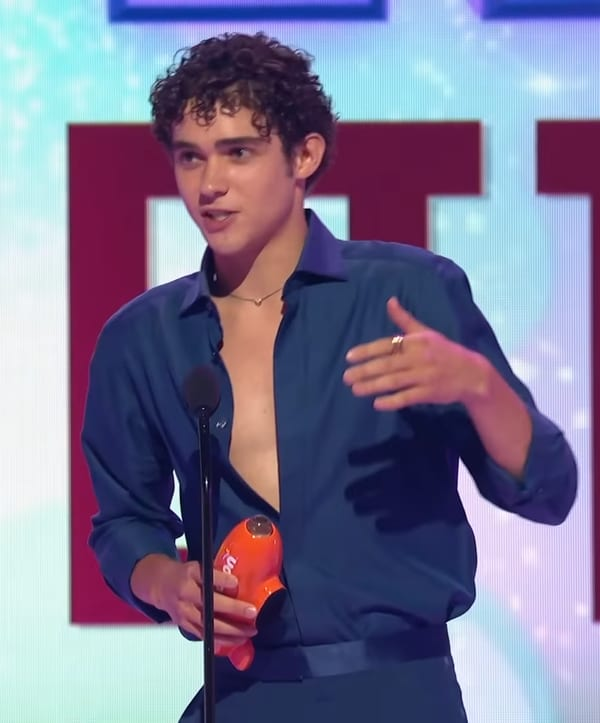
Joshua Bassett 6.4 · musician
2022 · CC BY 3.0 · NickRewind
File:Joshua Bassett accepting his award at 2022 KCAs.png
_returns_to_Naval_Station_Rota%2C_Spain%2C_June_1%2C_2026_(9724731).jpg "File:USS Bulkeley (DDG 84) returns to Naval Station Rota, Spain, June 1, 2026 (9724731).jpg")
Jude Bellingham 6.4 · athlete
2026 · CC BY-SA 4.0 · Bryan Berlin
File:Jude Bellingham England v Ghana 23 June 2026-061 (cropped).jpg
.jpg "File:25th Laureus World Sports Awards - Red Carpet - Jude Bellingham - 240422 190558 (cropped).jpg")
.jpg "File:Jude Bellingham England v Panama 27 June 26-160 (cropped).jpg")
.jpg "File:25th Laureus World Sports Awards - Red Carpet - Jude Bellingham - 240422 190551-2 (cropped).jpg")
_(cropped).jpg "File:2025 04 26 Final de la Copa del Rey - 54482387776 (Vinícius Júnior, Jude Bellingham e Rodrygo Goés) (cropped).jpg")
.jpg "File:25th Laureus World Sports Awards - 240422 205212 (cropped).jpg")
Kellan Lutz 6.4 · actor
2026 · CC BY-SA 4.0 · John Manard
File:Kellan Lutz at Big Lick ComicCon 2026 04 (cropped).jpg
.jpg "File:Kellan Lutz (54429282350).jpg")


.jpg "File:Kellan Lutz (54428054552).jpg")
.jpg "File:Kellan Lutz (54553092172).jpg")
Louis Tomlinson 6.4 · musician
2019 · CC BY 3.0 · MTV International
File:Louis Tomlinson 2019 MTV.png

.jpg "File:Louis Tomlinson (cropped).jpg")
.jpg "File:Louis Tomlinson (14255621286).jpg")


Lukas Gage 6.4 · actor
2026 · CC BY-SA 4.0 · User:Celestinesucess
File:Lukas Gage at Berlin Film Festival 2026, (P1230490).jpg
.jpg "File:Berlin Film Festival 2026, (P1230854).jpg")
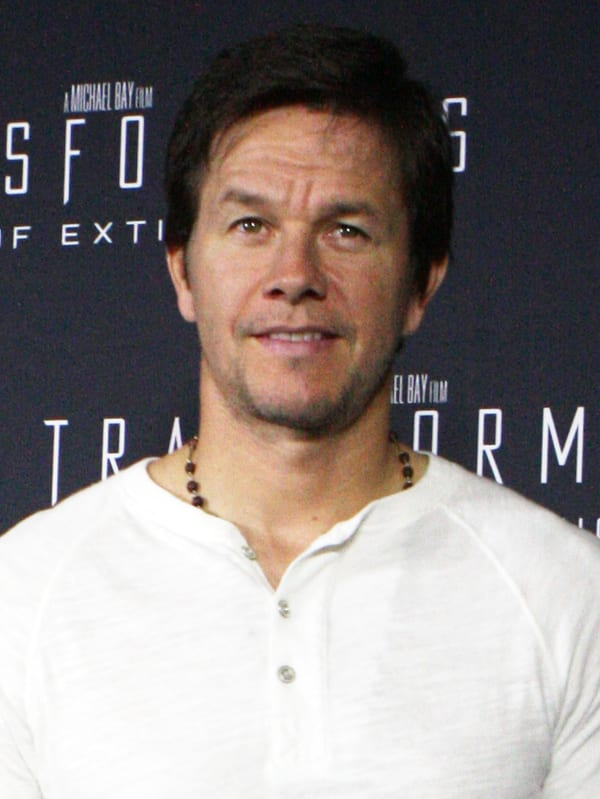
Mark Wahlberg 6.4 · actor · era 2008-2018
2014 · CC BY-SA 2.0 · Eva Rinaldi
File:Mark Wahlberg May 2014 (cropped).jpg

.jpg "File:Mark Wahlberg (14049769359).jpg")
.jpg "File:Mark Wahlberg (14049780219).jpg")
.jpg "File:Mark Wahlberg (6908664833).jpg")
.jpg "File:Mark Wahlberg (6908665915).jpg")
Neymar 6.4 · athlete
2017 · CC BY-SA 2.0 · Antoine Dellenbach from Paris, France
File:Neymar Jr presentation - Press conference for PSG 001 (cropped).jpg
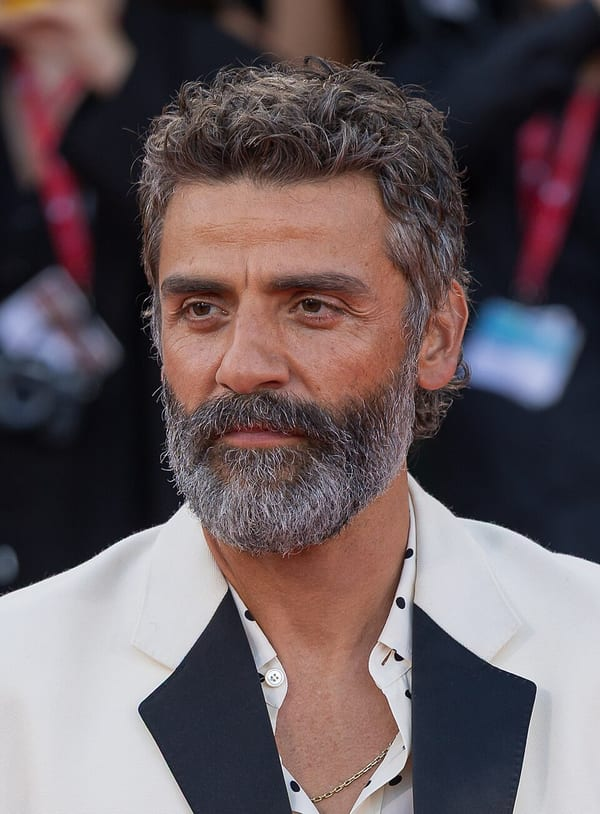
Oscar Isaac 6.4 · actor
2025 · CC BY-SA 4.0 · LucaFazPhoto
File:Oscar Isaac at 82nd Venice International Film Festival-1 (cropped).jpg
.jpg "File:Oscar Isaac (30694590031).jpg")


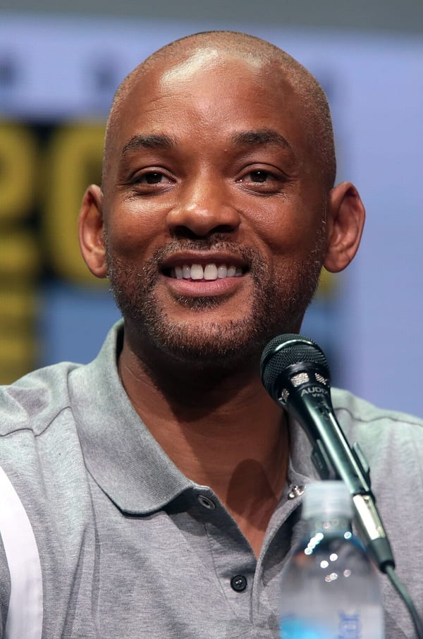
Will Smith 6.4 · actor · era 2008-2018
2017 · CC BY-SA 3.0 · Gage Skidmore
File:Will Smith by Gage Skidmore 2.jpg

_(cropped).jpg "File:TechCrunch Disrupt San Francisco 2019 - Day 1 (48834070763) (cropped).jpg")


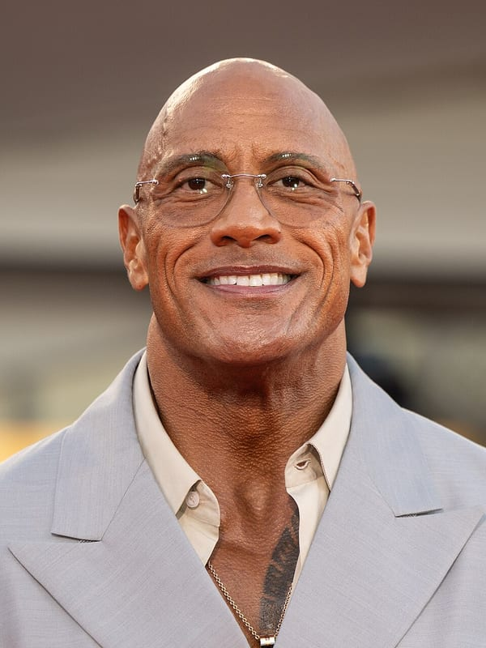
Dwayne Johnson 6.3 · actor
2025 · CC BY-SA 4.0 · Harald Krichel
File:Dwayne Johnson-1809 (cropped).jpg
.jpg "File:Dwayne Johnson-1764 (4x5 cropped with moderate headroom).jpg")
_(cropped).jpg "File:Dwayne \"The Rock\" Johnson Visits the Pentagon (41) (cropped).jpg")
.jpg "File:Dwayne Johnson Hercules 2014 (cropped).jpg")

.jpg "File:Dwayne Johnson star (Hollywood Walk of Fame stars).jpg")
Evan Peters 6.3 · actor
2025 · CC BY-SA 3.0 · Gage Skidmore
File:Evan Peters by Gage Skidmore 4.jpg

.jpg "File:Evan Peters 2014 (cropped).jpg")
_(cropped).jpg "File:Evan Peters (24942558771) (cropped).jpg")


Joe Burrow 6.3 · athlete
2022 · CC BY 3.0 · Lordstown Motors
File:Joe Burrow - Lordstown interview - 1 (cropped).png


.png "File:Joe Burrow - Lordstown interview (2).png")
_(cropped).jpg "File:LSU Football at the White House (49400533066) (cropped).jpg")

Justin Bieber 6.3 · musician
2018 · CC BY 3.0 · Rudy Mancuso
File:Justin Bieber (cropped).png
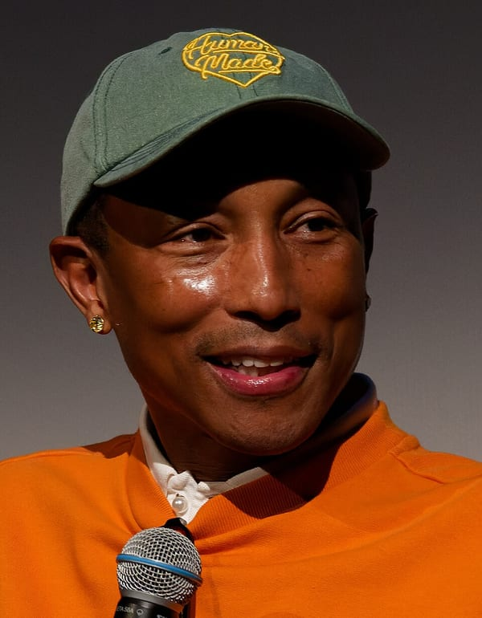
Pharrell Williams 6.3 · musician
2024 · CC BY-SA 4.0 · Kevin Payravi
File:Pharrell Williams at the 2024 Telluride Film Festival (cropped).jpg
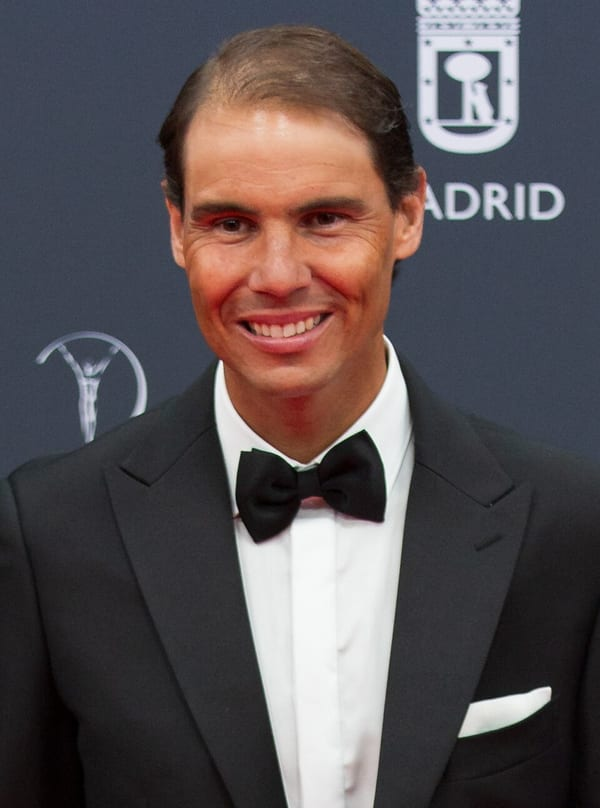
Rafael Nadal 6.3 · athlete
2024 · CC BY-SA 4.0 · Barcex
File:Rafael Nadal en 2024 (cropped).jpg


.jpg "File:Rafa Nadal (Spain).jpg")
_(49307391088).jpg "File:Nadal PM19 (28) (49307391088).jpg")
Troye Sivan 6.3 · musician
2024 · CC BY 3.0 · PURE HONEY
File:Troye Sivan - 1999 - Primavera Sound Barcelona - 2024.jpg
_(cropped).jpg "File:2018.06.10 Troye Sivan at Capital Pride w Sony A7III, Washington, DC USA 03462 (42690655572) (cropped).jpg")
_(cropped).jpg "File:2018.06.10 Troye Sivan at Capital Pride w Sony A7III, Washington, DC USA 03467 (41840360485) (cropped).jpg")
_(cropped).jpg "File:2018.06.10 Troye Sivan at Capital Pride w Sony A7III, Washington, DC USA 03466 (27870912547) (cropped).jpg")
_(cropped).jpg "File:2018.06.10 Troye Sivan at Capital Pride w Sony A7III, Washington, DC USA 03496 (27870945847) (cropped).jpg")
_(cropped).jpg "File:2018.06.10 Troye Sivan at Capital Pride w Sony A7III, Washington, DC USA 03497 (27870948467) (cropped).jpg")
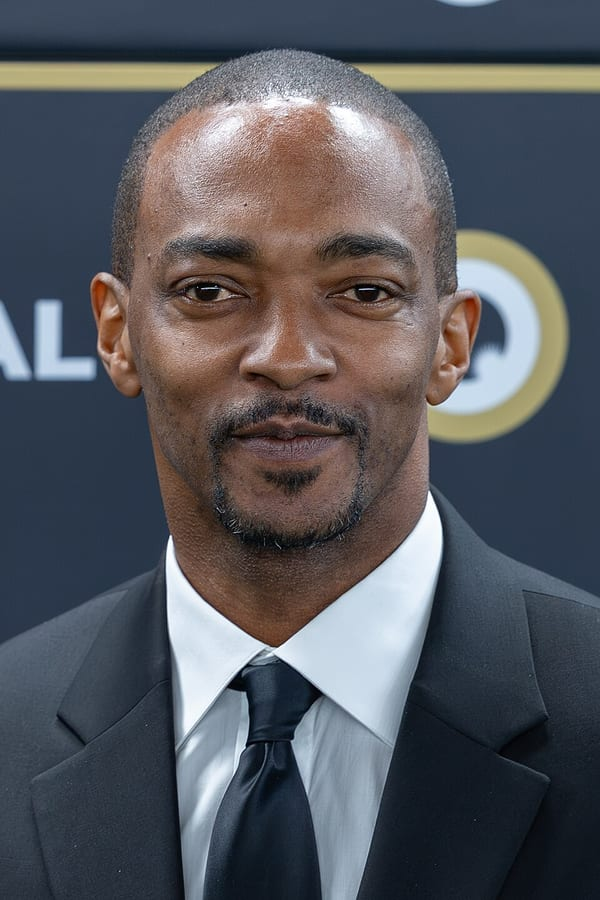
Anthony Mackie 6.2 · actor
2025 · CC BY 4.0 · Quejaytee
File:Anthony Mackie on the Green Carpet at the 2025 Zurich Film Festival 03 (cropped).jpg
.jpg "File:2025 Anthony Mackie (cropped).jpg")
.jpg "File:Anthony Mackie - All the Way Premier - 2016 (cropped).jpg")


.jpg "File:Anthony Mackie (48469212651).jpg")
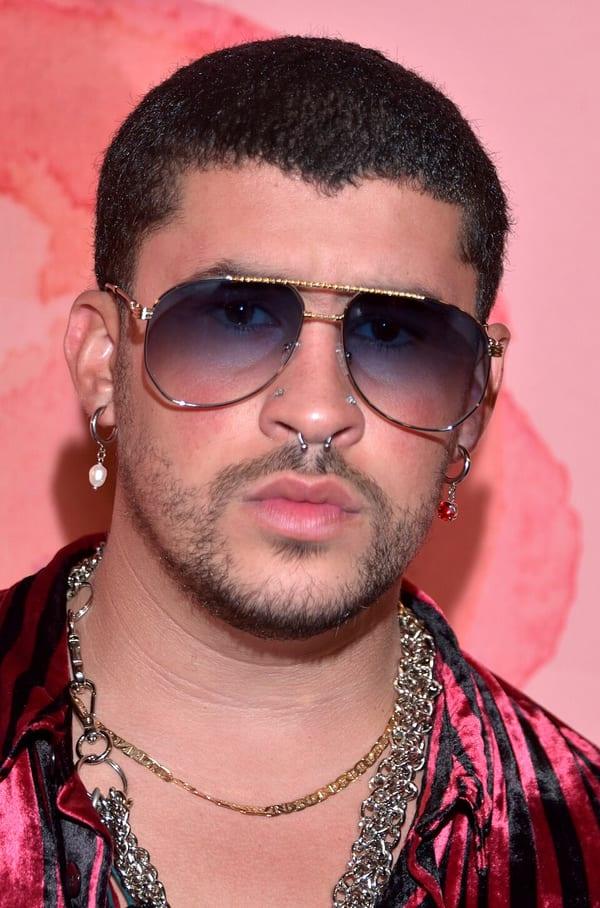
Bad Bunny 6.2 · musician
2019 · CC BY-SA 4.0 · Toglenn
File:Bad Bunny 2019 by Glenn Francis (cropped).jpg


Conor McGregor 6.2 · athlete
2025 · Public domain · U.S. Secretary of Defense
File:Conor McGregor 2025.jpeg
.jpg "File:Conor McGregor, UFC 189 World Tour London (2).jpg")

.jpg "File:Conor McGregor mugshot (2019).jpg")


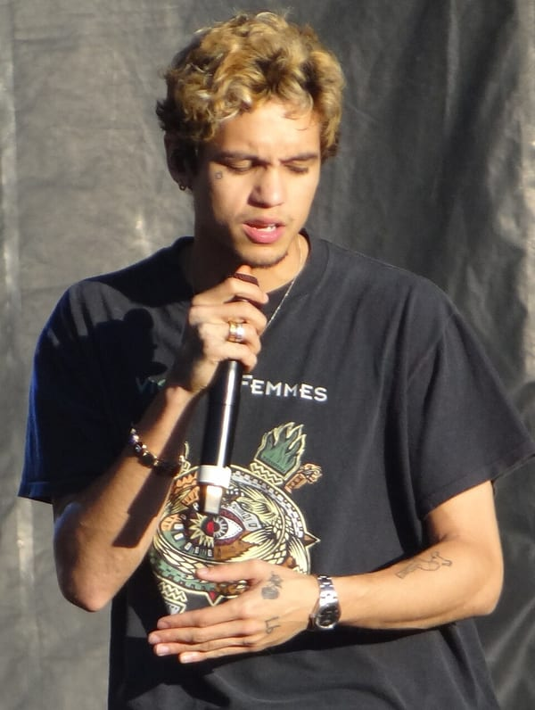
Dominic Fike 6.2 · musician
2021 · CC0 · Thomson200
File:2021 Shaky Knees Dominic Fike (3) (cropped).jpg


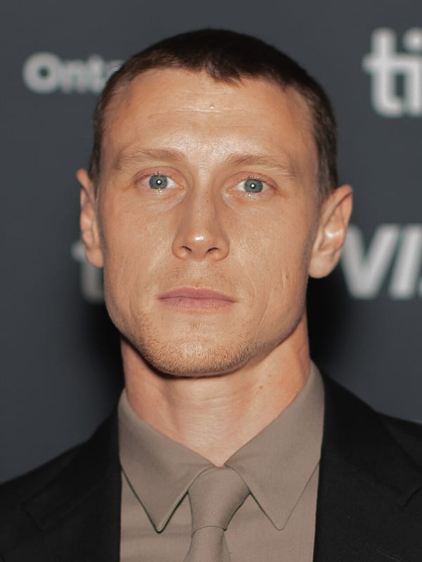
George MacKay 6.2 · actor
2024 · CC BY-SA 4.0 · John Sears
File:George MacKay at the 2024 Toronto International Film Festival 3 (Cropped).jpg
.jpg "File:George MacKay at 82nd Venice International Film Festival-2 (cropped).jpg")


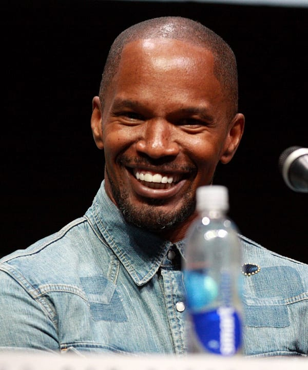
Jamie Foxx 6.2 · actor
2013 · CC BY-SA 3.0 · Gage Skidmore
File:Jamie Foxx by Gage Skidmore.jpg
Jared Padalecki 6.2 · actor
2025 · CC0 · Fandomuniverse
File:Jared Padalecki at MEGACON Orlando 2025.png

.jpg "File:Jared Padalecki (35444305903).jpg")


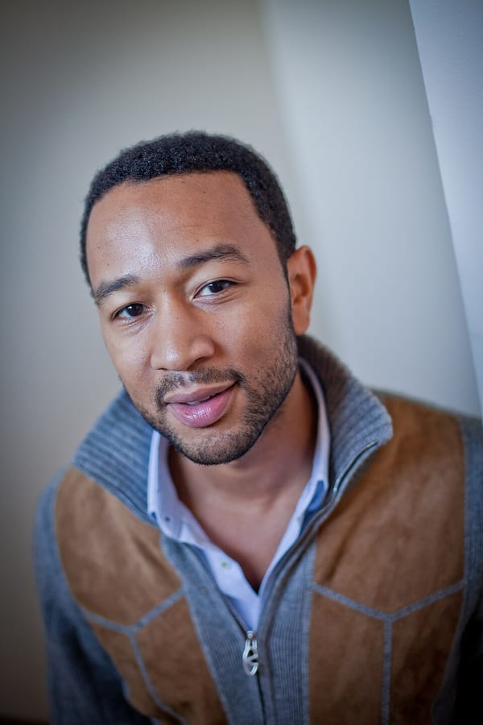
John Legend 6.2 · musician
2026 · CC BY-SA 4.0 · PhilipRomanoPhoto
File:JohnLegend-byPhilipRomano.jpg
_(2).jpg "File:John Legend 2019 by Glenn Francis (cropped) (2).jpg")
.jpg "File:John Legend 2019 by Glenn Francis (cropped).jpg")
.jpg "File:John Legend by Sachyn Mital (cropped).jpg")

.jpg "File:John Legend (35218298802).jpg")
Joseph Quinn 6.2 · actor
2024 · CC BY-SA 3.0 · Gage Skidmore
File:Joseph Quinn by Gage Skidmore.jpg
_cropped.jpg "File:Joseph Quinn (53673388589) cropped.jpg")

.jpg "File:Joseph Quinn (53673250393).jpg")
.jpg "File:Joseph Quinn (53672153342).jpg")

Jungkook 6.2 · musician
2026 · CC BY 4.0 · K-POPIT 케이팝잇
File:Jung Kook of BTS, February 12, 2026 (1).png


Machine Gun Kelly 6.2 · musician
2023 · CC BY 2.0 · Erik Drost
File:Machine Gun Kelly Charity Softball (53117851335)crop.png
Mads Mikkelsen 6.2 · actor
2025 · CC BY-SA 4.0 · LucaFazPhoto
File:Mads Mikkelsen at 82nd Venice International Film Festival (cropped2).jpg
_cropped_to_face.jpg "File:Mads Mikkelsen (San Diego Comic-Con 2016) cropped to face.jpg")
.jpg "File:Stuttgart 2022 -Comic Con Germany-Mads Mikkelsen- by-RaBoe 007 (cropped).jpg")


.jpg "File:Mads Mikkelsen (28019463204).jpg")
Mason Mount 6.2 · athlete
2021 · CC BY-SA 4.0 · Voltmetro
File:Mason Mount - 2021-12-08 - FC Zenit Saint Petersburg v Chelsea F.C.jpg
Paul Rudd 6.2 · actor
2026 · CC BY-SA 4.0 · Bryan Berlin
File:Paul Rudd at the 2026 New York Film Festival-003.jpg
.jpg "File:Paul Rudd at a presser (cropped).jpg")
.jpg "File:Paul Rudd and Kate Mara at the 2024 Toronto International Film Festival 8 (cropped).jpg")
.jpg "File:Paul Rudd 2023 (cropped).jpg")
.jpg "File:Paul Rudd (cropped).jpg")
_2.jpg "File:Paul Rudd (cropped) 2.jpg")
Stephen Curry 6.2 · athlete
2017 · CC BY-SA 4.0 · Cyrus Saatsaz
File:Stephen Curry Shooting (1).jpg
Charlie Puth 6.1 · musician
2017 · CC BY 2.0 · LG전자
File:Charlie Puth 2017 (cropped).jpg

.jpg "File:Charlie Puth 2017 2 (cropped).jpg")
.jpg "File:Charlie Puth - The Armory - 6-25-2023 - 049 (cropped).jpg")
.jpg "File:Charlie Puth - How Long (Official Single Cover).jpg")

Austin Abrams 6.0 · actor
2024 · CC BY-SA 4.0 · Harald Krichel
File:Austin Abrams-60123.jpg
.jpg "File:840th Soldiers Brief HQDA Deputy Chief of Staff for Logistics on Port Operations (8789018).jpg")
.jpg "File:840th Soldiers Brief HQDA Deputy Chief of Staff for Logistics on Port Operations (8789019).jpg")
.jpg "File:840th Soldiers Brief HQDA Deputy Chief of Staff for Logistics on Port Operations (8789020).jpg")
.jpg "File:840th Soldiers Brief HQDA Deputy Chief of Staff for Logistics on Port Operations (8789021).jpg")
.jpg "File:840th Soldiers Brief HQDA Deputy Chief of Staff for Logistics on Port Operations (8789022).jpg")
Ben Affleck 6.0 · actor
2026 · CC BY-SA 4.0 · LucaFazPhoto
File:Ben Affleck at 83rd Venice International Film Festival-1 (cropped).jpg
.jpg "File:Ben Affleck at 83rd Venice International Film Festival-1 (cropped 3x4).jpg")
.jpg "File:Ben Affleck SDCC 2014 (cropped).jpg")
_(cropped).jpg "File:Ben Affleck & Ezra Miller (36072079871) (cropped).jpg")


Benedict Cumberbatch 6.0 · actor
2025 · CC BY-SA 4.0 · Harald Krichel
File:Benedict Cumberbatch-67555.jpg
.jpg "File:Benedict Cumberbatch in 2024 (cropped).jpg")
.jpg "File:Benedict Cumberbatch - 2024 (cropped).jpg")
.jpg "File:Benedict Cumberbatch-67218 (cropped).jpg")
.jpg "File:Benedict Cumberbatch on the set of Doctor Strange 2 (cropped).jpg")

Benson Boone 6.0 · musician
2024 · CC BY-SA 4.0 · Warner Records
File:Benson Boone Press Copy Warner Records (cropped).png


Bruno Mars 6.0 · musician
2017 · CC BY 2.0 · slgckgc
File:Bruno Mars - 24K Magic Tour (37320927992) (cropped).jpg
Central Cee 6.0 · musician
2023 · CC BY-SA 4.0 · 200izo
File:Central cee-5.jpg
Conan Gray 6.0 · musician
2026 · CC BY-SA 4.0 · CamilaAlves.raf
File:Conan Gray at 2026 Montreux Jazz Festival-05.jpg
Daniel Craig 6.0 · actor · era 2008-2016
2022 · CC BY 4.0 · Max Surprenant
File:Daniel Craig TIFF 2025 Red Carpet (cropped).jpg


.jpg "File:Daniel Craig (2012).jpg")
Drake 6.0 · musician
2017 · CC BY-SA 2.0 · GabboT
File:Drake at The Carter Effect 2017 (36818935200) (cropped).jpg
.jpg "File:Drake July 2016 (4x5 close cropped).jpg")

.jpg "File:Drake and Future 2016 Summer Sixteen Tour (cropped).jpg")
.jpeg "File:Drake and Future 2016 Summer Sixteen Tour (cropped 3x4).jpeg")
.jpg "File:Drake (45184).jpg")
Gerard Butler 6.0 · actor
2016 · CC BY-SA 2.0 · Gordon Correll
File:Gerard Butler (29681162176).jpg
.jpg "File:Gerard Butler with Navy (cropped).jpg")
.jpg "File:TIFF Tuesday-20 (21283524188).jpg")
.jpg "File:Gerard Butler (Berlin Film Festival 2011).jpg")


Jack Harlow 6.0 · musician
2022 · CC BY 2.0 · Erik Drost
File:Jack Harlow at the 2022 NBA All-Star Celebrity Game.jpg
Javier Bardem 6.0 · actor · era 2008-2016
2011 · CC BY-SA 3.0 · David Torcivia at https://www.flickr.com/photos/viatorci/
File:Javier Bardem 2011 AA (cropped).jpg


.jpg "File:Javier Bardem (8464895960).jpg")
.jpg "File:Premios Goya 2018 - Javier Bardem (cropped).jpg")
John Boyega 6.0 · actor
2025 · CC BY-SA 4.0 · Miguel Discart & Kiri Karma
File:John Boyega (54716098702).jpg


Joseph Gordon-Levitt 6.0 · actor
2026 · CC BY 4.0 · Colleen Sturtevant
File:Joseph Gordon Levitt Sundance Film Festival 2026 (cropped).jpg
.jpeg "File:Joseph Gordon-Levitt TechCrunch Disrupt San Francisco 2019 - Day 1 (cropped).jpeg")
_(cropped).jpg "File:Joseph Gordon-Levitt 2019 (48833105818) (cropped).jpg")
.jpg "File:Joseph Gordon-Levitt 2025 (cropped).jpg")


Lakeith Stanfield 6.0 · actor
2017 · CC BY-SA 3.0 · Gage Skidmore
File:Keith Stanfield by Gage Skidmore.jpg
LeBron James 6.0 · athlete
2022 · CC BY 2.0 · Erik Drost
File:LeBron James and Kevin Love (cropped).jpg
Matthew Gray Gubler 6.0 · actor
2017 · CC BY-SA 2.0 · Greg2600
File:Matthew Gray Gubler takes a pic with Greg2600 in New York City 2017.jpg
.jpg "File:Matthew Gray Gubler (cropped).jpg")
.jpg "File:Melissa Benoist LA Film Festival (cropped).jpg")
_(cropped).jpg "File:Kyle Gallner at the LA Flm Festival premiere of Band of Robbers - DSC 0065 (18783600906) (cropped).jpg")
_(cropped).jpg "File:Melissa Benoist at the LA Flm Festival premiere of Band of Robbers - DSC 0197 (18804843402) (cropped).jpg")

Michael Phelps 6.0 · athlete
2016 · CC BY 2.0 · Agência Brasil Fotografias
File:Michael Phelps Rio Olympics 2016.jpg
_(cropped).jpg "File:MICHAEL PHELPS E KATIE LEDECKY CONCEDEM ENTREVISTAS NO PARQUE OLÍMPICO (28132564163) (cropped).jpg")


Niall Horan 6.0 · musician
2023 · CC BY 3.0 · iHeartRadioCA
File:Niall Horan on iHeartRadio Canada in 2023 (1) (cropped).png
_(cropped).jpg "File:Niall Horan 1 (27137634098) (cropped).jpg")

.jpg "File:Niall Horan 1 (27137634098).jpg")
.jpg "File:Niall Horan 3 (40115389435).jpg")

Nico Hiraga 6.0 · actor
2026 · CC BY-SA 4.0 · JoshPopov
File:TIFF-2026-THE-JULIA-SET-NICO-HIRAGA-01.png


Novak Djokovic 6.0 · athlete
2024 · CC BY-SA 4.0 · Andymiah
File:Novak Djokovic Paris 2024 Olympic Games (cropped).jpg
_(cropped).jpg "File:Novak Djokovic Eastbourne tennis 2017-12-2 (35456277672) (cropped).jpg")
_(52883600048)_(cropped).jpg "File:Djokovic MCM23 (5) (52883600048) (cropped).jpg")
_(cropped).jpg "File:Aegon Eastbourne - Novak on Eurosport (35678415455) (cropped).jpg")
.jpg "File:Novak Djokovic (34775891004).jpg")

Roger Federer 6.0 · athlete
2015 · CC BY-SA 2.0 · Tatiana from Moscow, Russia
File:Roger Federer 2015 (cropped).jpg
_(28136155830).jpg "File:Federer WM16 (37) (28136155830).jpg")
.jpg "File:Roger Federer (18953614769).jpg")
.jpg "File:Roger Federer (19113580056).jpg")

.jpg "File:Roger Federer (31125444138).jpg")
Steve Lacy 6.0 · musician
Tom Felton 6.0 · actor
2025 · CC BY 4.0 · Desmond Herzfelder
File:Tom Felton at the 2025 Toronto International Film Festival (cropped).jpg


.jpg "File:Tom Felton 01 (21268809876).jpg")
.jpg "File:Tom Felton 02 in 2015 (20673956413).jpg")
Trent Alexander-Arnold 6.0 · athlete
2019 · CC BY 2.0 · Eric The Fish from UK
File:LFC Parade 2019 01 Trent Alexander-Arnold.jpg
Vin Diesel 6.0 · actor
2013 · CC BY-SA 2.0 · Gage Skidmore from Peoria, AZ, United States of America
File:Vin Diesel 2013 SDCC (cropped).jpg


Daniel Kaluuya 5.9 · actor
2026 · CC BY-SA 4.0 · Marlene Landu
File:Daniel Kaluuya in 2026 (cropped).jpg
_(cropped).jpg "File:Daniel Kaluuya (35439676943) (cropped).jpg")
_(cropped).jpg "File:Daniel Kaluuya (35411578144) (cropped).jpg")
_(cropped_2).jpg "File:Daniel Kaluuya (35411578144) (cropped 2).jpg")
_(cropped).jpg "File:Daniel Kaluuya (2017) (cropped).jpg")

Glenn Howerton 5.9 · actor
2013 · CC BY-SA 3.0 · Gage Skidmore
File:Glenn Howerton by Gage Skidmore 3.jpg


.jpg "File:Glenn Howerton (9365868530).jpg")
.jpg "File:Glenn Howerton (9365867002).jpg")
.jpg "File:Glenn Howerton (9363090233).jpg")
Jack Quaid 5.9 · actor
2026 · CC BY-SA 4.0 · John Manard
File:Jack Quaid Dragon Con September 4 2026-3.JPG


Jon Bernthal 5.9 · actor
2026 · CC BY-SA 4.0 · PhilipRomano
File:JonBernthal-byPhilipRomano2.jpg
_(cropped).jpg "File:Jon Bernthal (15408783930) (cropped).jpg")
_(cropped).jpg "File:Jon Bernthal (34154391474) (cropped).jpg")


.jpg "File:Jon Bernthal (53983124020).jpg")
Kylian Mbappé 5.9 · athlete
2026 · CC BY-SA 4.0 · Bryan Berlin
File:Kylian Mbappe France v Senegal 16 June 2026-391 (cropped).jpg
.jpg "File:Kylian Mbappe celebrating - March 2018 (cropped).jpg")


.jpg "File:2019-07-17 SG Dynamo Dresden vs. Paris Saint-Germain by Sandro Halank–129 (cropped).jpg")

Lionel Messi 5.9 · athlete
2026 · CC BY-SA 4.0 · Bryan Berlin
File:Leo Messi Argentina v Egypt 7 July 2026-1.jpg
.jpg "File:Lionel Messi 20180626 (cropped).jpg")
_(Messi_crop).jpg "File:CINvMIA 2023-08-23 - Lionel Messi, Tata Martino (PXL 20230824 010525464) (Messi crop).jpg")

_(cropped).jpg "File:Tiro Libre Messi (19153749690) (cropped).jpg")

Mark Ruffalo 5.9 · actor
2017 · CC BY-SA 2.0 · Gage Skidmore from Peoria, AZ, United States of America
File:Mark Ruffalo (36201774756) (cropped).jpg
_(cropped).jpg "File:Mark Ruffalo (36243137665) (cropped).jpg")
.jpg "File:Mark Ruffalo - 2010 New York Film Festival (cropped).jpg")


Owen Wilson 5.9 · actor
2017 · CC BY-SA 2.0 · Zach Catanzareti
File:Owen Wilson 2017 Daytona 500.jpg
.jpg "File:Owen Wilson, Hall Pass 2011 (4).jpg")
.jpg "File:Owen Wilson, Hall Pass 2011 (2).jpg")
.jpg "File:Owen Wilson, Hall Pass 2011 (1).jpg")
.jpg "File:Owen Wilson, Hall Pass 2011 (10).jpg")
.jpg "File:Owen Wilson, Hall Pass 2011 (8).jpg")
Pedro Pascal 5.9 · actor
2026 · CC BY-SA 4.0 · Bryan Berlin
File:Pedro Pascal at the 2026 New York Film Festival-042.jpg
.jpg "File:Pedro Pascal, actor, at SXSW 2025 04 (cropped).jpg")
.jpg "File:Pedro Pascal, actor, at SXSW 2025 02 (cropped).jpg")
.jpg "File:Pedro Pascal at SXSW 2025 01 (cropped).jpg")


Taron Egerton 5.9 · actor
2026 · CC BY-SA 4.0 · Gabriel Hutchinson
File:Taron Egerton at TIFF 2026 03 (cropped).jpg
_(cropped).jpg "File:Taron Egerton (28990343924) (cropped).jpg")

_(cropped).jpg "File:Taron Egerton by Gage Skidmore (14596254110) (cropped).jpg")
.jpg "File:Taron Egerton (29146743073).jpg")

The Weeknd 5.9 · musician
2023 · CC BY 3.0 · Canal22
File:The Weeknd Cannes 2023.png
Travis Scott 5.9 · musician
2026 · CC BY-SA 4.0 · PhilipRomano
File:TravisScott-byPhilipRomano.jpg
.jpg "File:Travis Scott The DAMN. Tour (cropped).jpg")
.jpg "File:McDonald's sign reading \"Travis Scott was Here\" in St. Petersburg, FL, Sep 2020 (cropped).jpg")
.jpg "File:TravisScott-byPhilipRomano (cropped).jpg")
.jpg "File:Travis Scott mugshot (2024).jpg")
.jpg "File:McDonald's sign reading \"Cactus Jack was Here\" in St. Petersburg, FL, Sep 2020 (cropped).jpg")
Adam Driver 5.8 · actor
2026 · CC BY-SA 4.0 · Bryan Berlin
File:Adam Driver at the 2026 New York Film Festival-084 (cropped).jpg
_(cropped).jpg "File:Star Wars- The Last Jedi Japan Premiere Red Carpet- Adam Driver (27163437599) (cropped).jpg")
.jpg "File:Adam Driver at the 2026 New York Film Festival-084 (cropped II).jpg")


Chris Martin 5.8 · musician
2023 · CC BY 2.0 · Raph_PH
File:Chris Martin 2023 (52950419334) (cropped).jpg
Daniel Radcliffe 5.8 · actor
2015 · CC BY-SA 2.0 · Gage Skidmore from Peoria, AZ, United States of America
File:Daniel Radcliffe in July 2015.jpg
_(cropped).jpg "File:Daniel Radcliffe (14594645950) (cropped).jpg")
.jpg "File:Daniel Radcliffe (19740428165).jpg")


Declan Rice 5.8 · athlete
2026 · CC BY-SA 4.0 · Bryan Berlin
File:Declan Rice England v Ghana 23 June 2026-150.jpg
.jpg "File:Declan Rice England v Ghana at 2026 Fifa World Cup by YantsImages 01 (cropped).jpg")


.jpg "File:Chelsea 1 West Ham 1 2018 (cropped).jpg")
Jason Sudeikis 5.8 · actor
2023 · Public domain · The White House
File:Jason Sudeikis on March 20, 2023 in the Oval Office of the White House - P20230320AS-2571 (cropped).jpg
Jeremy Renner 5.8 · actor
2022 · CC BY 4.0 · Max Surprenant
File:Jeremy Renner at TIFF 2025 (cropped).jpg
.jpg "File:Jeremy Renner SDCC 2014 (cropped).jpg")
_2.jpg "File:Jeremy Renner at the Cadogan Hall on 12th June 2025 (cropped) 2.jpg")


.jpg "File:Jeremy Renner (8426813772).jpg")
Josh Brolin 5.8 · actor
2022 · CC BY 4.0 · Max Surprenant
File:Josh Brolin TIFF 2025 (cropped).jpg
.jpg "File:Josh Brolin 2 SDCC 2014 (cropped).jpg")


Kevin Costner 5.8 · actor · era 2003-2014
2014 · CC BY-SA 2.0 · gdcgraphics
File:Kevin Costner 2014.jpg
Lil Nas X 5.8 · musician
2019 · CC BY 2.0 · DiFronzo
File:Lil Nas X (cropped).jpg
.jpg "File:Lil Nas X Talks About Gaining His Father's Acceptance, Growing Up in Atlanta, & FINDING HIMSELF 7-32 screenshot (headshot).jpg")
.jpg "File:Lil Nas X back stage at the MTV Video Music Awards 2019 (cropped).jpg")
.png "File:Lil Nas X 2024 Long Live Montero premiere (cropped).png")

_(53009419903)_(cropped).jpg "File:Glasto2023 (348 of 468) (53009419903) (cropped).jpg")
Matt Damon 5.8 · actor
2026 · CC BY-SA 4.0 · PhilipRomano
File:MattDamon-byPhilipRomano2.jpg
.jpg "File:Matt Damon, Berlinale 2023 (cropped).jpg")


.jpg "File:DamonFamily-byPhilipRomano (cropped and straightened).jpg")
Morgan Wallen 5.8 · musician
2025 · CC BY 3.0 · the CwE
File:Morgan Wallen performing at Bank of America Stadium (cropped).png
Patrick Mahomes 5.8 · athlete
2023 · Public domain · Adam Schultz
File:Patrick Mahomes in the Oval Office of the White House on June 5, 2023 - P20230605AS-0902 (cropped).jpg
Pedri 5.8 · athlete
2026 · CC BY-SA 4.0 · Bryan Berlin
File:Pedri France v Spain 7.24.26-245.jpg
.jpg "File:Pedri (cropped).jpg")
.jpg "File:Pedri Argentina v Spain 19 July 2026-197 (cropped).jpg")


Usain Bolt 5.8 · athlete
2024 · CC BY-SA 4.0 · Barcex
File:25th Laureus World Sports Awards - Red Carpet - Usain Bolt - 240422 190118 (cropped).jpg
.jpg "File:Usain Bolt by Augustas Didzgalvis (cropped).jpg")


Marcus Rashford 5.7 · athlete
2026 · CC BY-SA 4.0 · Bryan Berlin
File:Marcus Rashford England v Ghana 23 June 2026-073.jpg

.jpg "File:Marcus Rashford September 2016 (cropped).jpg")
.jpg "File:Marcus Rashford, FWC 2018 - Round of 16 - COL v ENG - Photo 106 (cropped).jpg")


Anthony Edwards 5.6 · athlete
2026 · CC BY-SA 4.0 · Bryan Berlin
File:Anthony Edwards Argentina v Egypt 7 July 2026-069 (cropped).jpg
.jpg "File:Anthony Edwards Georgia (cropped).jpg")
.jpg "File:Anthony Edwards Georgia 2 (cropped).jpg")
.jpg "File:Anthony Edwards (cropped).jpg")
_(cropped)_(cropped).jpg "File:Anthony Edwards Kentavious Caldwell-Pope (51734745028) (cropped) (cropped).jpg")
_(cropped)_(cropped)2.jpg "File:Anthony Edwards Kentavious Caldwell-Pope (51734745028) (cropped) (cropped)2.jpg")
Bill Hader 5.6 · actor
2016 · CC BY-SA 2.0 · Greg2600
File:Bill Hader (29419489470) (cropped).jpg


.jpg "File:Bill Hader (29419489470).jpg")

.jpg "File:Bateman, Weaver, and Tambor Comic-Con (cropped).jpg")
Bo Burnham 5.6 · comedian
2018 · CC BY 2.0 · Montclair Film
File:Bo Burnham Montaclair Film Festival (cropped).jpg
.jpg "File:Bo Burnham at the Montclair Film Festival 2018 02 (cropped).jpg")

.jpg "File:Bo Burnham in Pittsburgh (cropped).jpg")


Caleb McLaughlin 5.6 · actor
2025 · CC BY 3.0 · La Gazzetta dello Sport
File:Caleb McLaughlin 2025 (1).png

_(cropped).jpg "File:Caleb McLaughlin (35820571320) (cropped).jpg")
_(cropped).jpg "File:Caleb McLaughlin (35820574810) (cropped).jpg")
_(cropped).jpg "File:Caleb McLaughlin (36078743831) (cropped).jpg")
_(cropped).jpg "File:Caleb McLaughlin (36172645196) (cropped).jpg")
Colin Firth 5.6 · actor · era 2005-2015
2014 · CC BY 2.0 · Gage Skidmore
File:Colin Firth 2014 Comic Con (cropped).jpg

_(cropped).jpg "File:Colin Firth (36124162705) (cropped).jpg")
.jpg "File:Colin Firth 2011 (cropped).jpg")

.jpg "File:Colin Firth (3539756032).jpg")
Eddie Murphy 5.6 · actor · era 2005-2016
2010 · Public domain · David Shankbone
File:Eddie Murphy by David Shankbone.jpg
_(cropped).jpg "File:Eddie Murphy speedskater (14462814982) (cropped).jpg")


.jpg "File:Eddie Murphy Tribeca Shankbone 2010 NYC (2).jpg")

Hugh Grant 5.6 · actor · era 2005-2016
2014 · CC BY-SA 3.0 · Kurt Kulac
File:Hugh Grant in 2014.jpg
.jpg "File:Hugh Grant Brussels '08 (cropped).jpg")


Jake Paul 5.6 · creator
2026 · Public domain · The White House
File:Jake Paul March 2026 (3x4 cropped).jpg
_(cropped).jpg "File:Jake Paul (53116882732) (cropped).jpg")
.jpg "File:Jake Paul (53116882732).jpg")


Joaquin Phoenix 5.6 · actor
2024 · CC BY-SA 4.0 · Harald Krichel
File:Joaquin Phoenix-64908 (cropped).jpg
.jpg "File:Joaquin Phoenix-2184 (cropped 2).jpg")
.jpg "File:Joaquin Phoenix-2196 (cropped).jpg")


John Mulaney 5.6 · comedian
2026 · Public domain · Airman 1st Class Jabes Hernandez Matias
File:John Mulaney visits Tinker Air Force Base (8) (cropped).jpg

.jpg "File:John Mulaney - September 2014 (cropped).jpg")
.jpg "File:2024-03-09 SXSW Conan Nick-Kroll Office-Space events 06581 (cropped).jpg")

.jpg "File:Hudson Theatre (52302264678).jpg")
Kevin Bacon 5.6 · actor · era 2008-2016
2010 · Public domain · U.S. Navy Petty Officer 1st Class Chad J. McNeeley
File:Defense.gov photo essay 100414-N-0696M-087 (cropped).jpg


.jpg "File:Kevin Bacon (24740203830).jpg")
.jpg "File:Kevin Bacon The Best You Can-55 (cropped).jpg")
.jpg "File:Black Mass PC 01 (21429084296).jpg")
Kevin Durant 5.6 · athlete
2017 · CC BY 2.0 · Maryland GovPics
File:Kevin Durant Day (36573174561) (cropped).jpg
Matty Healy 5.6 · musician
2025 · CC BY 4.0 · Raph_PH
File:Glasto2025-89 - 54645728944 (cropped).jpg
.jpg "File:Matty Healy - POS19 DAY1-352 (48486586171).jpg")
.jpg "File:Matthew Healy of The 1975 at Southside Festival 2014 in Neuhausen ob Eck (cropped).jpg")
.jpg "File:The 1975 F.I.B. 2016 (cropped).jpg")
.jpg "File:The 1975 - Southside Festival 2023 - DSC04731 (cropped).jpg")
.jpg "File:1975INDY1 (cropped).jpg")
Nathan Fillion 5.6 · actor
2026 · CC BY 4.0 · Kevin Paul
File:Nathan Fillion at San Diego Comic Con 2026-5.jpg
.jpg "File:Nathan Fillion - Guardians of the Galaxy premiere - July 2014 (cropped).jpg")


Phil Foden 5.6 · athlete
2023 · CC BY-SA 4.0 · Steffen Prößdorf
File:2023-10-04 Fußball, Männer, UEFA Champions League, RB Leipzig - Manchester City FC 1DX 2613, Phil Foden.jpg
.jpg "File:2023-10-04 Fußball, Männer, UEFA Champions League, RB Leipzig - Manchester City FC 1DX 2724 (cropped).jpg")

.jpg "File:Phil Foden (36502388741).jpg")

.jpg "File:Paris Saint-Germain - Manchester City FC, 22 January 2025 (201).jpg")
Rami Malek 5.6 · actor
2015 · CC BY 2.0 · Dominick D
File:Rami Malek in 2015 (2) (cropped).jpg

_(cropped).jpg "File:SXSW 2016 - Rami Malek (25138464364) (cropped).jpg")
_(cropped_2).jpg "File:SXSW 2016 - Rami Malek (25138464364) (cropped 2).jpg")
.jpg "File:Rami Malek at The Man I Love Premiere at NYFF46 (cropped).jpg")
.jpg "File:Rami Malek in 2015 (cropped).jpg")
Rob McElhenney 5.6 · actor
2013 · CC BY-SA 3.0 · Gage Skidmore
File:Rob McElhenney by Gage Skidmore 3.jpg

.jpg "File:Rob McElhenney (2016 crop).jpg")


Theo Von 5.6 · comedian
2016 · CC BY-SA 2.0 · Lisa Gansky from New York, NY, USA
File:Theo Von Comedian (cropped).jpg
_2.jpg "File:Theo Von Comedian (cropped) 2.jpg")


Zlatan Ibrahimović 5.6 · athlete
2026 · CC BY-SA 4.0 · Colleen Sturtevant
File:Zlatan Ibrahimović nyc.jpg
.jpg "File:Zlatan Ibrahimović (48116886396).jpg")
.jpg "File:Zlatan Ibrahimović (48116890751).jpg")


_-_Zlatan_Ibrahimovi%C4%87_(edited).jpg "File:Manchester United v Zorya Luhansk, September 2016 (08) - Zlatan Ibrahimović (edited).jpg")
Ja Morant 5.5 · athlete
2021 · CC BY-SA 2.0 · All-Pro Reels
File:Ja Morant 2021.jpg
.jpg "File:Ja Morant (cropped).jpg")
_(cropped)2.jpg "File:Ja Morant (51664923611) (cropped)2.jpg")
_(cropped).jpg "File:Ja Morant (51664923611) (cropped).jpg")
.jpg "File:Ja Morant Rui Hachimura (50641444746).jpg")

Jason Bateman 5.5 · actor
2026 · CC BY-SA 4.0 · Colleen Sturtevant
File:Jason Bateman.jpg
.jpg "File:Jason Bateman (cropped).jpg")
.jpg "File:Jason Batement at the Air Premiere (cropped).jpg")

.jpg "File:Jason Sudeikis, Charlie Day, Jason Bateman (cropped).jpg")

Jeff Goldblum 5.5 · actor · era 2010-2019
2017 · CC BY-SA 3.0 · Gage Skidmore
File:Jeff Goldblum by Gage Skidmore.jpg
Kevin De Bruyne 5.5 · athlete
2026 · CC BY-SA 4.0 · Bryan Berlin
File:Kevin De Bruyne USMNT v Belgium Mar 28 2026-64 (cropped).jpg
.jpg "File:De Bruyne (cropped).jpg")
_(cropped).jpg "File:Kevin De Bruyne (24640482031) (cropped).jpg")
.jpg "File:Kevin de Bruyne 2016-12-26 (cropped).jpg")
.jpg "File:2021-12-07 Fußball, Männer, UEFA Champions League, RB Leipzig - Manchester City FC 1DX 2723 by Stepro (cropped).jpg")
.jpg "File:2021-12-07 Fußball, Männer, UEFA Champions League, RB Leipzig - Manchester City FC 1DX 2782 by Stepro (cropped).jpg")
Aaron Paul 5.4 · actor
2025 · CC BY 4.0 · Kevin Paul
File:Aaron Paul - AMC The Grove - Ash.jpg
_(cropped).jpg "File:Aaron Paul (29734396088) (cropped).jpg")
_(cropped).jpg "File:Aaron Paul (42699965635) (cropped).jpg")

.jpg "File:Aaron Paul Berlinale 2014 (cropped).jpg")

Andrew Schulz 5.4 · comedian
2023 · CC BY 3.0 · Brilliant Idiots
File:Andrew Schulz FixBy James Tamim.jpeg
.png "File:Andrew Schulz 2023 V2 (cropped).png")
.png "File:Andrew Schulz 2023 (cropped).png")
.png "File:Andrew Schulz 2023 V2 (cropped and straightened).png")

.jpg "File:Gerald Strebendt (cropped).jpg")
Andrew Scott 5.4 · actor
2025 · CC BY 4.0 · Raph_PH
File:Andrew Scott, BlueMoonBFILFF161025-72 (54875258361) (cropped).jpg
.jpg "File:Andrew Scott at Berlinale 2025 (cropped).jpg")
.jpg "File:Andrew Scott Toronto International Film Festival 2025 1 (cropped).jpg")
.jpg "File:Andrew Scott Toronto International Film Festival 2025 1 (cropped 2).jpg")
.jpg "File:Andrew Scott Blue Moon-34 (cropped).jpg")
_(cropped).jpg "File:Andrew Scott at the 2022 TIFF Premiere of Catherine Called Birdy (52359116143) (cropped).jpg")
Asa Butterfield 5.4 · actor
2018 · CC BY-SA 2.0 · https://flickr.com/photos/greg2600
File:Asa Butterfield in 2018 (cropped).jpg

.jpg "File:Asa Butterfield in 2011 (cropped).jpg")
.jpg "File:Asa Butterfield in 2019 (cropped1).jpg")


Dan Levy 5.4 · actor
2025 · CC BY-SA 4.0 · Patrick.suechan
File:Dan Levy at the 2025 Toronto International Film Festival 02 (cropped 2).jpg
.jpg "File:Dan Levy at the 2025 Toronto International Film Festival 02 (cropped).jpg")


.jpg "File:Dan Levy and Jessi Cruickshank of MTV fame (3941349786).jpg")
Denzel Washington 5.4 · actor
2025 · CC BY-SA 4.0 · Gabriel Hutchinson
File:Denzel Washington at the 2025 Cannes Film Festival.jpg
.jpg "File:Denzel Washington at the 2024 Toronto International Film Festival 02 (cropped).jpg")
.jpg "File:Denzel Washington at the 2024 Toronto International Film Festival 04 (cropped).jpg")
_(cropped).jpg "File:Denzel Washington (29479254650) (cropped).jpg")
.jpg "File:Denzel Washington and Pauletta Washington at the 2024 Toronto International Film Festival 05 (cropped).jpg")

Jason Segel 5.4 · actor
2025 · CC BY 4.0 · Kevin Paul
File:Jason Segel at Televerse 2025.jpg

.jpg "File:Cameron Diaz and Jason Segel September 2014 (cropped).jpg")


Kevin Hart 5.4 · comedian
2014 · CC BY-SA 2.0 · Eva Rinaldi
File:Kevin Hart 2014 (cropped 2).jpg
.jpg "File:Kevin Hart 2014 (cropped).jpg")
_(cropped).jpg "File:Kevin Hart 2014 (cropped) (cropped).jpg")
.jpg "File:The Secret Life of Pets 2, Kevin Hart (48012978948).jpg")
.jpg "File:The Secret Life of Pets 2, Kevin Hart (48012960106).jpg")
.jpg "File:Kevin Hart (15975712492).jpg")
Kumail Nanjiani 5.4 · actor
2026 · CC BY 4.0 · Colleen Sturtevant
File:KumailAliNanjiani.jpg
.jpg "File:Kumail Ali Nanjiani (cropped).jpg")
.jpg "File:Kumail Nanjiani the Meltdown December 2011 (cropped).jpg")


Lucas Hedges 5.4 · actor
2017 · CC BY 3.0 · UPROXX
File:Lucas Hedges 2017.png
.jpg "File:Lucas Hedges in New York, 2017 (cropped).jpg")
.jpg "File:Lucas Hedges (31914577576).jpg")

Michael Jordan 5.4 · athlete · era 2005-2015
2006 · CC BY-SA 2.0 · Joshua Massel . Cropped by en:User:Quadzilla99
File:Michael Jordan.jpg
_(cropped).jpg "File:Michael jordan admad rashad (51276390562) (cropped).jpg")


MrBeast 5.4 · creator
2026 · CC BY 4.0 · Tyren Redd
File:MrBeast in 2026 (cropped 4).png
.jpg "File:MrBeast 2023 (cropped).jpg")
.png "File:MrBeast in 2026 (cropped 2).png")
.png "File:MrBeast in 2026 (3x4 cropped).png")
_(cropped).jpg "File:CrunchLabs - MrBeast Opened the WRONG BOX!!! (MRus4BCPRyY - 0m28s) (cropped).jpg")
.jpg "File:MrBeast 2022 02 crop (cropped).jpg")
Vinícius Júnior 5.4 · athlete
2026 · CC BY-SA 4.0 · Bryan Berlin
File:Vinícius Júnior Brazil V Morocco 13 June 2026-207 (cropped).jpg
.jpg "File:Vinicius Junior Brazil V Morocco 13 June 2026-94 (cropped).jpg")
.jpg "File:Vinicius Junior 2018 1 (cropped).jpg")


Ben Stiller 5.3 · actor · era 2008-2016
2010 · CC BY-SA 3.0 · Jiyang Chen
File:Ben Stiller 2010 (Cropped).jpg
.jpg "File:Ben Stiller at the 2024 Toronto International Film Festival (cropped).jpg")


Jim Carrey 5.3 · comedian
2020 · CC BY 3.0 · SHOWTIME
File:Jim Carrey 2020 cropped.jpg
.jpg "File:Jim Carrey, 2010 (cropped).jpg")
.jpg "File:Jim Carrey 2020 (cropped2).jpg")


.jpg "File:Jim-Carrey-2008 (cropped).jpg")
Sacha Baron Cohen 5.3 · actor
2024 · CC BY 2.0 · Raph_PH
File:Sacha Baron Cohen (2024) (3x4 cropped).jpg
_01.jpg "File:Sacha Baron Cohen (2024) 01.jpg")
_02.jpg "File:Sacha Baron Cohen (2024) 02.jpg")
_03.jpg "File:Sacha Baron Cohen (2024) 03.jpg")


Bukayo Saka 5.2 · athlete
2026 · CC BY-SA 4.0 · Bryan Berlin
File:Bukayo Saka England v Ghana 23 June 2026-057 (cropped).jpg
.jpg "File:1 bukayo saka arsenal 2025 (cropped).jpg")
.jpg "File:Bukayo Saka England v Panama 27 June 26-108 (cropped).jpg")


Cole Palmer 5.2 · athlete
2025 · CC BY 4.0 · Crusadaer
File:Cole Palmer (Chelsea) vs Leicester City, 9th March 2025 (cropped).jpg
Colman Domingo 5.2 · actor
2026 · CC0 · Sofia Luna Cabras
File:Colman Domingo at Ralph Lauren dinner 2026 (cropped).jpg
_(cropped).jpg "File:Colman Domingo (39300779370) (cropped).jpg")
.jpg "File:Colman Domingo, 2018 (cropped).jpg")
.jpg "File:Colman Domingo at 82nd Venice International Film Festival-1 (cropped).jpg")


Daniel Caesar 5.2 · musician
2018 · CC BY 2.0 · Raph_PH
File:Daniel Caesar - Coachella 2018.jpg
_(cropped).jpg "File:Daniel Caesar performing at Coachella18W1-24 (27188366877) (cropped).jpg")


Finn Wolfhard 5.2 · actor
2025 · CC BY 3.0 · HEYFOMO
File:Finn Wolfhard 2025 (crop).png
_(cropped).png "File:Stranger Things cast 2025 (2) (cropped).png")
_(cropped).jpg "File:Finn Wolfhard (35820643640) (cropped).jpg")


.png "File:Finn Wolfhard 2025 (1).png")
Harry Kane 5.2 · athlete
2026 · CC BY-SA 4.0 · Bryan Berlin
File:Harry Kane England v Ghana 23 June 2026-024 (cropped).jpg
.jpg "File:Harry Kane England v Ghana 23 June 2026-219 (cropped).jpg")


Jesse Eisenberg 5.2 · actor
2023 · CC BY-SA 3.0 · Harald Krichel
File:Jesse Eisenberg-62192 (cropped).jpg
José Mourinho 5.2 · coach
2025 · CC BY 4.0 · Zafer
File:José Mourinho 20250206 (1).jpg
.jpg "File:José Mourinho (cropped).jpg")
.jpg "File:GlobeSoccer Awards 2012 - Jose Mourinho (cropped).jpg")
.jpg "File:Fenerbahce manager Jose Mourinho and Ali Koç, June 2024 (cropped).jpg")


Paul Bettany 5.2 · actor
2026 · CC BY-SA 4.0 · PhilipRomano
File:PaulBettany-byPhilipRomano.jpg
_(cropped).jpg "File:Paul Bettany (48469131797) (cropped).jpg")
_(cropped).jpg "File:Paul Bettany (52958772905) (cropped).jpg")
_(cropped)~2.jpg "File:Paul Bettany (48469131797) (cropped)~2.jpg")


Rupert Grint 5.2 · actor
2026 · CC BY-SA 4.0 · User:Celestinesucess
File:Rupert Grint at Berlin Film Festival 2026, (P1230675) (cropped).jpg
_(cropped2).jpg "File:Rupert Grint at Berlin Film Festival 2026, (P1230675) (cropped2).jpg")


.jpg "File:Dédicace de Rupert Grint (2014).jpg")
Steve Carell 5.2 · actor
2025 · CC BY 4.0 · Kevin Paul
File:Steve Carell - The 40-Year-Old-Virgin.jpg
.jpg "File:Steve Carell in 2021 (cropped).jpg")
.jpg "File:Steve Carell MFF 2014 (cropped).jpg")
_(cropped).jpg "File:Beautiful Boy 02 (42978861620) (cropped).jpg")
.JPG "File:Steve Carell (Hollywood Walk of Fame stars).JPG")

Tyler, the Creator 5.2 · musician
2022 · CC BY 2.0 · Raph_PH
File:Tyler the Creator 2022 cropped (cropped).png
Jimmy Fallon 5.1 · comedian
2019 · CC BY 3.0 · Danielle Marie Carolan
File:Jimmy Fallon 2019 01 (cropped).png

_(5x7_cropped_and_rotated).jpg "File:Jimmy Fallon-TTL 4575 (11046141004) (5x7 cropped and rotated).jpg")


.jpg "File:Jimmy Fallon (cropped).jpg")
Barry Keoghan 5.0 · actor
2024 · CC BY-SA 4.0 · Kevin Payravi
File:Barry Keoghan at the 2024 Toronto International Film Festival (cropped).jpg
.jpg "File:Barry Keoghan 2024 (cropped).jpg")

.png "File:Barry Keoghan in 2020 (2).png")
.png "File:Barry Keoghan in 2020 (3).png")

Charlie Day 5.0 · actor
2010 · CC BY-SA 3.0 · Gage Skidmore
File:Charlie Day by Gage Skidmore (cropped).jpg
Dave Chappelle 5.0 · comedian
2025 · CC BY-SA 4.0 · Kolby Ari
File:Dave Chappelle at Preamiere of "Dave Chappelle In Real Life" (2) (cropped 2).jpg
_(cropped).jpg "File:Dave Chappelle (42791297960) (cropped).jpg")
_(cropped).jpg "File:Dave Chappelle at Preamiere of \"Dave Chappelle In Real Life\" (2) (cropped).jpg")
_(cropped).jpg "File:Star Is Born 12 (44027279495) (cropped).jpg")
.jpg "File:Dave Chappelle 01 (43988612115).jpg")
.jpg "File:Lunt-Fontanne Theatre - Dave Chappelle (48296060697).jpg")
Elijah Wood 5.0 · actor
2025 · CC BY-SA 4.0 · Bryan Berlin
File:Elijah Wood at the 2025 Sundance Film Festival (cropped)2.jpg
_(cropped).jpg "File:Elijah Wood (47955397556) (cropped).jpg")
.jpg "File:Elijah Wood at the 2025 Sundance Film Festival (cropped).jpg")
_2.jpg "File:Elijah Wood at the 2025 Sundance Film Festival (cropped) 2.jpg")
.jpg "File:Elijah Wood 2014 Comic Con (cropped).jpg")

Eminem 5.0 · musician
2021 · CC0 · Brendan_linden
File:Eminem in 2021.jpg
Kai Cenat 5.0 · creator
2025 · CC BY 3.0 · ImDavisss Live
File:Kai Cenat July 2025.jpg
.jpg "File:Kai Cenat 2023 (cropped).jpg")


Mark Strong 5.0 · actor
2026 · CC BY-SA 4.0 · PhilipRomano
File:MarkStrong-byPhilipRomano.jpg

.jpg "File:Mark Strong (23884312904).jpg")


_2.jpg "File:Mark Strong (Berlin Film Festival 2011) 2.jpg")
Michael Cera 5.0 · actor
2023 · CC BY-SA 4.0 · Martin Kraft
File:MKr22364 Michael Cera (The Adults, Berlinale 2023).jpg
.jpg "File:Michael Cera 2012 (Cropped).jpg")
.jpg "File:MKr22369 Michael Cera (The Adults, Berlinale 2023).jpg")

.jpg "File:Michael Cera (6986387409).jpg")
.jpg "File:Michael Cera (6986387781).jpg")
Noah Schnapp 5.0 · actor
2025 · CC BY 4.0 · Kevin Paul
File:Noah Schnapp - NBFF 2025.jpg


.png "File:Noah Schnapp 2025 (1).png")
.png "File:Noah Schnapp 2025 (2).png")
.png "File:Noah Schnapp 2025 (3).png")
Peso Pluma 5.0 · musician
2023 · CC BY 3.0 · https://youtube.com/@kcmusica
File:Peso Pluma concierto (cropped).png
_(1).png "File:Peso Pluma, performing in Monterrey (2024-09-24) (1).png")
.jpg "File:PESO PLUMA - 2024.09.24 (3).jpg")


.png "File:Peso Pluma w. Escorpión Dorado (2023).png")
Pete Davidson 5.0 · comedian
2025 · CC BY-SA 4.0 · LaVar James
File:Pete Davidson portrait (cropped).png

.jpg "File:Pete Davidson in 2015 (17073107891).jpg")

Sam Rockwell 5.0 · actor
2018 · CC BY-SA 4.0 · Rhododendrites
File:Sam Rockwell (51492) (cropped).jpg

.jpg "File:Sam Rockwell Talk Easy (cropped).jpg")
_(cropped).jpg "File:Jojo Rabbit 10 (48810047303) (cropped).jpg")
_(cropped).jpg "File:Sam Rockwell (8279227257) (cropped).jpg")
.jpg "File:Sam Rockwell (51527).jpg")
Woody Harrelson 5.0 · actor
2019 · Public domain · Mass Communication Specialist 2nd Class Justin R. Pacheco
File:Woody Harrelson 191020-N-NU281-1028 (cropped).jpg


.jpg "File:Rampart Premiere Harrelson (cropped).jpg")


Adam Sandler 4.9 · actor
2025 · CC BY-SA 4.0 · Bryan Berlin
File:Adam Sandler Jay Kelly-33 (cropped).jpg
Ed Sheeran 4.9 · musician
2018 · CC BY-SA 3.0 · Harald Krichel
File:Ed Sheeran-6886 (cropped).jpg
.jpg "File:Ed Sheeran 2022 (3x4 crop).jpg")
.jpg "File:Ed Sheeran-6826 (cropped).jpg")
.jpg "File:Ed Sheeran-6956 (cropped).jpg")
.jpg "File:Ed Sheeran-6886 (cropped 2).jpg")
_(cropped)_(cropped).jpg "File:Queen Elizabeth II Platinum Jubilee 2022 - Platinum Pageant (52124436078) (cropped) (cropped).jpg")
IShowSpeed 4.9 · creator
2024 · CC BY-SA 2.0 · Chin Yu Chu
File:IShowSpeed at Chinatown (Portrait) 04.jpg
.jpg "File:IShowSpeed RR25 (cropped).jpg")
_03_(cropped).jpg "File:IShowSpeed at Chinatown (Portrait) 03 (cropped).jpg")
.jpg "File:IShowSpeed at Pahang Street, Singapore - 20240924 - RSKY 03 (cropped).jpg")
_03.jpg "File:IShowSpeed at Chinatown (Portrait) 03.jpg")
_01.jpg "File:IShowSpeed at Chinatown (Portrait) 01.jpg")
Pep Guardiola 4.9 · coach
2023 · CC BY-SA 4.0 · Steffen Prößdorf
File:Josep Guardiola 2023-10-04 Fußball, Männer, UEFA Champions League, RB Leipzig - Manchester City FC 1DX 2797 (cropped).jpg
.jpg "File:Pep Guardiola Training FC Bayern München-3 (cropped).jpg")

_(cropped).jpg "File:Otamendi's turn to hear it from Pep (36593750266) (cropped).jpg")

.jpg "File:Guardiola 2010 neutral-bgr (cropped).jpg")
Bryan Cranston 4.8 · actor · era 2010-2018
2018 · CC BY-SA 2.0 · Gage Skidmore from Peoria, AZ, United States of America
File:Bryan Cranston (41796512930) (cropped).jpg
_(cropped).jpg "File:Bryan Cranston (43604294241) (cropped).jpg")
.jpg "File:Bryan Cranston 2022 (3x4 cropped).jpg")


Jamie Vardy 4.8 · athlete
2018 · CC BY-SA 3.0 · Кирилл Венедиктов
File:Jamie Vardy 2018 (cropped).jpg

.jpg "File:Jamie Vardy 08 sierpnia 2015 (cropped).jpg")
.png "File:Jamie Vardy 07-04-12 (cropped).png")


Jerry Seinfeld 4.8 · comedian · era 2008-2017
2010 · CC BY 2.0 · David Shankbone
File:Jerry Seinfeld by David Shankbone.jpg


Jimmy Kimmel 4.8 · comedian
2022 · Public domain · Erin Scott
File:Jimmy Kimmel June 2022.jpg
Joji 4.8 · musician
Lil Uzi Vert 4.8 · musician
2018 · CC BY 3.0 · Icebox
File:Lil Uzi Vert (2018).png


Luka Dončić 4.8 · athlete
2026 · Public domain · U.S. Embassy Ljubljana
File:Luka Dončić and Marines, 2026 (cropped).jpg
.jpg "File:Luka Doncic 2021 (cropped).jpg")
_(cropped).jpg "File:Luka Doncic (55095317361) (cropped).jpg")
_(cropped1).jpg "File:Luka Doncic (51914951721) (cropped1).jpg")
_(cropped).jpg "File:Luka Doncic, Jorge Parra, Domagoj Proleta y Pablo Poyatos (13919153208) (cropped).jpg")
.jpg "File:Luka Dončić 7 Real Madrid Baloncesto Euroleague 20171012 (2).jpg")
Mike Myers 4.8 · actor · era 2005-2014
2010 · CC BY 3.0 · David Shankbone
File:Mike Myers David Shankbone 2010 NYC.jpg
Pete Holmes 4.8 · comedian
2024 · CC BY 3.0 · Pete Holmes
File:Pete Holmes looking forward odd expression (cropped).jpg
.jpg "File:Pete Holmes frightened potentially (cropped).jpg")
.jpg "File:Pete Holmes laughing very much (cropped).jpg")
_(cropped).jpg "File:Pete Holmes and Jenny Slate at BookExpo (05583) (cropped).jpg")


Shaquille O'Neal 4.8 · athlete
2017 · CC BY-SA 2.0 · MarkScottAustinTX
File:Shaquille O'Neal October 2017 (cropped).jpg
.jpg "File:TechCrunch Disrupt 2023 - Day 1 (cropped).jpg")
.jpg "File:Shaquille O'Neal (cropped).jpg")

.jpg "File:WrestleMania WrestleMania 32 April 2016 (4x5 cropped).jpg")

Vince Vaughn 4.8 · actor
2025 · Public domain · The White House
File:Actor Vince Vaughn (2025) (cropped).jpg
_-_1.jpg "File:Vince Vaughn in Los Angeles, California (2015) - 1.jpg")
_(cropped).jpg "File:Vince Vaughn (6160271577) (cropped).jpg")

.jpg "File:Hacksaw Ridge filming (cropped).jpg")

Jonah Hill 4.7 · actor
2019 · CC BY-SA 4.0 · Harald Krichel
File:Jonah Hill-4939 (cropped) (cropped).jpg
.jpg "File:Jonah Hill-4939 (cropped).jpg")


.jpg "File:Jonah Hill (28798841186).jpg")
Conan O'Brien 4.6 · comedian
2025 · CC BY 4.0 · Montclair Film
File:Conan O'Brien 2025.jpg

.jpg "File:2024-03-09 SXSW Conan Nick-Kroll Office-Space events 07123 (cropped).jpg")
.jpg "File:2024-03-09 SXSW Conan Nick-Kroll Office-Space events 07090 (cropped).jpg")

.jpg "File:Sona Movsesian Live Wire Radio (cropped).jpg")
KSI 4.6 · creator
2024 · CC BY 3.0 · MILLION DOLLAZ WORTH OF GAME
File:KSI in 2024 (2).png
.jpg "File:KSI in 2024 (cropped).jpg")


_5.jpg "File:JJ Olatunji (KSI) 5.jpg")
_6.jpg "File:JJ Olatunji (KSI) 6.jpg")
Lil Yachty 4.6 · musician
2025 · CC BY-SA 4.0 · Lygonstreet
File:Lil Yachty 2025.jpg

.jpg "File:2018 Lil Yachty (cropped).jpg")
.jpg "File:Lil Yachty 2021 (cropped).jpg")


Michael Keaton 4.6 · actor
2014 · CC BY-SA 2.0 · Blair-39
File:Michael Keaton (NYCC 2014) (cropped).JPG
Morgan Freeman 4.6 · actor · era 2005-2014
2006 · CC BY 2.0 · David Sifry
File:Morgan Freeman, 2006 (cropped).jpg


_(cropped)_3.jpg "File:Academy Award-winning actor Morgan Freeman narrates for the opening ceremony (26904746425) (cropped) 3.jpg")


Ray Romano 4.6 · comedian
2014 · Public domain · SAMHSA
File:Ray Romano 2014.jpg
.jpg "File:Ray Romano 2011 (cropped).jpg")

.jpg "File:Bad Education 02 (48810498807).jpg")
.jpg "File:Jason Katims, Lauren Graham, and Ray Romano (18365600641).jpg")
.jpg "File:Andre Braugher 2011 (cropped).jpg")
Robert De Niro 4.6 · actor · era 2003-2013
2007 · CC BY 2.0 · Thore Siebrands (Siebbi) at https://www.flickr.com/photos/siebbi/
File:DeNiroBerlinFeb07 (cropped).jpg


Samuel L. Jackson 4.6 · actor · era 2005-2015
2014 · CC BY-SA 2.0 · Gage Skidmore
File:Samuel L. Jackson SDCC 2014 (cropped).jpg
Snoop Dogg 4.6 · musician
2024 · CC BY 2.0 · Diego Serrano
File:Snoop Dogg, WrestleMania XL (cropped) (cropped).jpg
Gary Neville 4.5 · athlete
2014 · CC BY 2.0 · University of Salford Press Office
File:Gary Neville 2014 (cropped).jpg


Nikola Jokić 4.5 · athlete
2020 · CC BY-SA 2.0 · All-Pro Reels
File:Nikola Jokic free throw (cropped).jpg

.jpg "File:Nikola Jokic (40980299891).jpg")
.jpg "File:Nikola Jokic (40086258855).jpg")
.jpg "File:Nikola Jokic (51915710680).jpg")
.jpg "File:Nikola Jokic (51915413529).jpg")
Victor Wembanyama 4.5 · athlete
2024 · CC BY 4.0 · Frenchieinportland
File:Victor Wembanyama San Antonio Spurs 2024.jpg
.jpg "File:Victor Wembanyama Mets 92 (cropped).jpg")
.jpg "File:Victor Wembanyama San Antonio Spurs 2025 NBA Cup (cropped).jpg")
.jpg "File:Victor Wembanyama ASVEL (cropped).jpg")
.jpg "File:Victor Wembanyama San Antonio Spurs 2025 NBA Cup (cropped 2).jpg")

Al Pacino 4.4 · actor · era 2000-2012
2016 · CC BY 2.0 · Embajada de EEUU en la Argentina
File:ALPACINO 0234e (30401875260) (cropped).jpg

_(cropped).jpg "File:ALPACINO 0225e (30702008505) (cropped).jpg")


.jpg "File:Tony Montana - Scarface - Graffiti (cropped).jpg")
Chris Rock 4.4 · comedian
2026 · CC BY-SA 4.0 · Colleen Sturtevant
File:Chris Rock.jpg
_(cropped).jpg "File:Chris Rock - Orpheum Theatre Minneapolis 3 17 (33336280016) (cropped).jpg")
.jpg "File:Chris Rock in 2026 TIFF (cropped).jpg")


Christopher Walken 4.4 · actor · era 2005-2014
2009 · CC BY 3.0 · David Shankbone
File:Christopher Walken portrait 2009.jpg


Joe Rogan 4.4 · comedian
2026 · Public domain · The White House
File:2026 Joe Rogan at the White House (cropped).jpg
.jpg "File:Joe Rogan 2026 (cropped).jpg")

.jpg "File:2026 Joe Rogan with Donald Trump at the White House (cropped).jpg")
.PNG "File:JoeRogan-USMCPhoto-Cropped (colour correction).PNG")

Jon Favreau 4.4 · actor
2016 · CC BY-SA 2.0 · Eva Rinaldi (Uploader: Musa Raza )
File:Jon Favreau 2016.jpeg
.jpg "File:Jon Favreau (25875971690).jpg")
.jpg "File:Jon Favreau (26267055561).jpg")
.jpg "File:Jon Favreau (51181059650).jpg")
.jpg "File:Jon Favreau (51180184768).jpg")

Luke Combs 4.4 · musician
2020 · CC BY 2.0 · Manouel Roman
File:Luke Combs in 2020.png
Seth Rogen 4.4 · actor
2026 · CC BY-SA 4.0 · Jay Dixit
File:Seth Rogen at Toronto International Film Festival 2026 - 8.jpg
.jpg "File:Seth Rogen at the Sundance Film Festival 2026 (cropped).jpg")

_(cropped).jpg "File:Seth Rogen at Collision 2019 - SM0 1823 (47106936404) (cropped).jpg")


Wayne Rooney 4.4 · athlete
2018 · CC BY-SA 2.0 · All-Pro Reels from District of Columbia, USA
File:Wayne Rooney (50121495731) (cropped).jpg
Bob Odenkirk 4.3 · actor
2026 · CC BY 4.0 · Kevin Paul
File:Bob Odenkirk at 53rd Saturn Awards 2026-02.jpg
_(cropped).jpg "File:Bob Odenkirk (43602730951) (cropped).jpg")
_(cropped).jpg "File:Bob Odenkirk (43555583562) (cropped).jpg")
_(cropped).jpg "File:Bob Odenkirk (28715082787) (cropped).jpg")
_(cropped).jpg "File:Bob Odenkirk at the 2025 Toronto International Film Festival for Normal (pointing 2) (cropped).jpg")

Fred Armisen 4.3 · comedian
2022 · CC BY-SA 4.0 · Colleen Sturtevant
File:Fred Armisen at Rock Center.jpg
_(cropped).jpg "File:Fred Armisen, May 2012 (4) (cropped).jpg")

.jpg "File:Fred Armisen (18415168510).jpg")


Gaten Matarazzo 4.3 · actor
2022 · CC BY-SA 4.0 · Philip Romano
File:Gaten Matarazzo.jpg
_(cropped).jpg "File:Gaten Matarazzo (36078967051) (cropped).jpg")


.jpg "File:Gaten Matarazzo (35793992423).jpg")

Gordon Ramsay 4.3 · chef
2006 · CC BY 2.0 · Dave Pullig
File:Gordon Ramsay (cropped).jpg

.jpg "File:MasterChef comes to March Air Reserve Base 180831-F-RA446-004 (cropped).jpg")
.jpg "File:Eu já comi duas vezes o ravioli de frutos do mar que é um prato-assinatura do Gordon Ramsay at Royal Hospital Road (26672111050).jpg")
.jpg "File:Gordon Ramsay Claridges (cropped).jpg")
.jpg "File:ChefRamsay (cropped).jpg")
Will Ferrell 4.3 · actor
2024 · CC BY-SA 4.0 · Adam Chitayat
File:Will Ferrell at the 2024 Toronto International Film Festival 5 (cropped).jpg
.jpg "File:Harper Steele and Will Ferrell at the 2024 Toronto International Film Festival (cropped).jpg")


Bill Burr 4.2 · comedian
2018 · CC BY-SA 3.0 · Gage Skidmore
File:Bill Burr by Gage Skidmore.jpg
.jpg "File:Bill Burr (42698437685).jpg")
.jpg "File:Bill Burr (29732606128).jpg")
.jpg "File:Bill Burr (43555611902).jpg")
.jpg "File:Bill Burr (43602801301).jpg")
.jpg "File:Bill Burr (42885233944).jpg")
Jacob Batalon 4.2 · actor
2016 · CC BY-SA 2.0 · Gage Skidmore from Peoria, AZ, United States of America
File:Jacob Batalon (28035642754) (cropped).jpg

.jpg "File:Laura Harrier-Spider-Man Homecoming by Gage Skidmore (cropped).jpg")
_(cropped).jpg "File:Marvel Studios panelists (28664364975) (cropped).jpg")
.jpg "File:Spider-Man Homecoming by Gage Skidmore (cropped).jpg")
.jpg "File:Jacob Batalon (28035647134).jpg")
Jason Mantzoukas 4.2 · comedian
2016 · CC BY-SA 2.0 · Gage Skidmore from Peoria, AZ, United States of America
File:Jason Mantzoukas (27974248644) (cropped).jpg
_(cropped).jpg "File:Jason Mantzoukas (28484572552) (cropped).jpg")
.jpg "File:Jason Mantzoukas (cropped).jpg")

.jpg "File:Dominic Cooper, Ruth Negga, Joseph Gilgun, Graham McTavish, Ian Colletti, Danielle Panabaker, Jason Mantzoukas (cropped).jpg")
.jpg "File:Jason Mantzoukas (28484572552).jpg")
Jim Gaffigan 4.2 · comedian
2023 · CC BY 2.0 · Montclair Film
File:Jim Gaffigan June 2023 (cropped).jpg
.jpg "File:Jim Gaffigan 2024 (cropped).jpg")
.jpg "File:Jim Gaffigan making a goofy excited face, Jan 2014, NYC (cropped).jpg")
.jpg "File:Jim Gaffigan May 2024 (cropped).jpg")


Kevin James 4.2 · actor
2011 · CC BY-SA 3.0 · www.Promiflash.de - Bitte bei Bildverwendung auch Link setzen
File:Kevin-james-dickste-freunde-berlin-17-01-11 (cropped).jpg
Lewis Capaldi 4.2 · musician
2025 · CC BY 4.0 · Raph_PH
File:Glasto2025-41 (cropped).jpg

.jpg "File:Lewis Capaldi - Ilosaarirock 2018 - 04 (cropped).jpg")
_(53008945661)_(cropped).jpg "File:Glasto2023 (176 of 468) (53008945661) (cropped).jpg")
.jpg "File:Glasto2025-42 (cropped).jpg")
_(53008351732)_(cropped).jpg "File:Glasto2023 (173 of 468) (53008351732) (cropped).jpg")
Nick Kroll 4.2 · comedian
2024 · CC BY 4.0 · Jay Dixit
File:2024-03-09 SXSW Conan Nick-Kroll Office-Space events 06581 (cropped).jpg
_(cropped).jpg "File:Nick Kroll at TIFF16 (29601078356) (cropped).jpg")
.jpg "File:Nick Kroll at SXSW-2024 Variety-comedy-awards (cropped).jpg")
.JPG "File:Nick Kroll 2011 Shankbone (cropped).JPG")


Post Malone 4.2 · musician
2018 · CC BY-SA 4.0 · Toglenn
File:Post Malone 2018 (cropped).jpg
Shane Gillis 4.2 · comedian
2025 · CC BY 4.0 · Quintin Soloviev
File:Shane Gillis (cropped) (cropped).jpg
.jpg "File:Shane Gillis (cropped).jpg")


.png "File:Kam Patterson 2024 (3).png")
.png "File:Kam Patterson 2024 (2).png")
Tom Segura 4.2 · comedian
2023 · CC BY 2.0 · Zach Catanzareti Photo
File:Tom segura (52703641878) (cropped).jpg
_(cropped).jpg "File:Corey lajoie tom segura bert kreischer (52703408054) (cropped).jpg")
.jpg "File:Tom segura bert kreischer (52703641878).jpg")
.jpg "File:Corey lajoie tom segura bert kreischer (52703408054).jpg")
.jpg "File:Chicago Theatre (47547033742).jpg")

Chris Stapleton 4.0 · musician
2019 · CC BY 2.0 · Steve Kwak - Maryland GovPics
File:Chris Stapleton Concert (48519730107) (cropped).jpg
Danny McBride 4.0 · actor
2013 · CC BY-SA 2.0 · Gage Skidmore
File:Danny McBride WonderCon 2013.jpg

.jpg "File:Halloween 02 (43988233365).jpg")

.jpg "File:Danny McBride (8610575471).jpg")
.jpg "File:Danny McBride (5177904583).jpg")
Horatio Sanz 4.0 · comedian
2015 · CC BY 3.0 · Behind The Velvet Rope TV
File:Horatio Sanz on Behind The Velvet Rope TV (cropped).jpg


Lil Dicky 4.0 · musician
2019 · CC BY 3.0 · Adweek
File:Lil Dicky (2019).jpg
.jpg "File:Lil-Dicky-Bumbershoot-2015 (cropped).jpg")


Mike Tyson 4.0 · athlete
2023 · CC BY 2.0 · Super Festivals
File:Mike Tyson Photo Op GalaxyCon Austin 2023.jpg


.jpg "File:Mike Tyson 01 (21106672988).jpg")
Nick Offerman 4.0 · actor
2022 · CC0 · Library of Congress Life
File:Nick Offerman 2022 National Book Festival (52342575962) (cropped).jpg
.jpg "File:Nick Offerman 2013 Headshot (cropped).jpg")
.jpg "File:Nick Offerman 2018 (cropped).jpg")
_(cropped).jpg "File:Nick Offerman (42636147234) (cropped).jpg")
_(cropped_2).jpg "File:Nick Offerman (42636147234) (cropped 2).jpg")
_(cropped).jpg "File:Nick Offerman (28061317928) (cropped).jpg")
Peter Crouch 4.0 · athlete
2014 · CC BY-SA 2.0 · Original: CFC Unofficial (Debs) / Derivative work: Danyele
File:Chelsea 3 Stoke 0 (13677350585) - Peter Crouch (cropped).jpg
Ricky Gervais 4.0 · actor
2021 · CC BY 2.0 · Raph_PH
File:GervaisPall230921 (15 of 17) (51527411486) (cropped 2).jpg
_(cropped).jpg "File:GervaisBlooms021218-21 (44341159690) (cropped).jpg")
_(51527411486)_(cropped).jpg "File:GervaisPall230921 (15 of 17) (51527411486) (cropped).jpg")

.jpg "File:GervaisBlooms021218-2 (44341159590).jpg")
.jpg "File:GervaisBlooms021218-3 (44341160110).jpg")
Rowan Atkinson 4.0 · actor
2013 · CC BY-SA 2.0 · Eva Rinaldi
File:Rowan Atkinson 2011 2 cropped.jpg

3.jpg "File:Rowan Atkinson on a Mini at Goodwood Circuit in 2009 (cropped)3.jpg")


.jpg "File:Johnny English Reborn Movie Premiere Rowan Atkinson (6111701056).jpg")
Steve Harvey 4.0 · comedian
2017 · Public domain · Avito C. Dalan, Philippine News Agency
File:Steve Harvey Miss Universe 2016(cropped).jpg

.jpg "File:SteveHarveyHWOFMay2013 (cropped).jpg")
.jpg "File:SteveHarveyHWOFMay2013 (4x5 cropped).jpg")
.jpg "File:SteveHarveyHWOFMay2013 (3x4 cropped).jpg")

Tim Robinson 4.0 · comedian
Zach Galifianakis 4.0 · actor
2008 · CC BY-SA 2.0 · Gaelen Hadlett
File:Zach Galifianakis Mar08 2.jpg


.jpg "File:Will Ferrell (7722869156).jpg")
.jpg "File:Will Ferrell (7722867182).jpg")
Bobby Moynihan 3.9 · comedian
Willem Dafoe 3.9 · actor
2026 · CC BY-SA 4.0 · Kalai Ramu
File:Willem Dafoe at 78th Locarno Film Festival (cropped).jpg
.jpg "File:Willem Dafoe-63668 (cropped).jpg")
.jpg "File:Willem Dafoe-63667 (cropped).jpg")

.jpg "File:Willem Dafoe 2014 (cropped).jpg")
.jpg "File:Willem Dafoe at Lisbon Film Festival 2017 (cropped & retouched).jpg")
Andy Richter 3.8 · comedian
2024 · CC BY-SA 2.0 · Cory Doctorow
File:Andy Richter (2024, Stop Making Sense, Pantages Theater panel) (cropped).jpg
.jpg "File:Andy Richter at the 2013 Final Four in Atlanta Georgia 02 (cropped).jpg")

_(5-3_cropped).jpg "File:Stop Making Sense, Pantages Theater panel (2024) (5-3 cropped).jpg")


Bert Kreischer 3.8 · comedian
Charles Barkley 3.8 · athlete
2019 · CC BY-SA 4.0 · Chensiyuan
File:1 charles barkley 2019 (cropped).jpg

_(cropped).jpg "File:Charles Barkley (55156737624) (cropped).jpg")
.jpg "File:Sonny Smith, Charles Barkley - Auburn University Lifetime Achievement Awards (cropped).jpg")
.jpg "File:Charles Barkley at East Carolina University (cropped).jpg")

Guy Fieri 3.8 · chef
2022 · CC BY 3.0 · Popdust
File:Guy Fieri 2022.png
Jack Black 3.8 · actor
2023 · CC BY 2.0 · Raph_PH
File:TenaciousDO2160623 (38 of 62) Jack Black.jpg


Josh Gad 3.8 · actor
2026 · CC BY 4.0 · Kevin Paul
File:Josh Gad at San Diego Comic Con 2026-2.jpg
.jpg "File:41st Annie Awards, Josh Gad (crop).jpg")


Patton Oswalt 3.8 · comedian
2017 · CC BY-SA 3.0 · Gage Skidmore
File:Patton Oswalt by Gage Skidmore 3 (cropped).jpg
_(cropped).jpg "File:Patton Oswalt (35378231284) (cropped).jpg")
_(cropped).jpg "File:Patton Oswalt (36172702786) (cropped).jpg")
_(cropped).jpg "File:Patton Oswalt (36172721146) (cropped).jpg")
_(cropped).jpg "File:Patton Oswalt (36172716906) (cropped).jpg")
_(cropped).jpg "File:Patton Oswalt (35377885584) (cropped).jpg")
Rick Ross 3.8 · musician
2021 · CC BY 3.0 · The 85 South Comedy Show
File:Rick Ross in the trap! (cropped).jpg
_(cropped).jpg "File:Rick Ross The Mastermind Tour June 15, 2014 Toronto (14590434716) (cropped).jpg")
.jpg "File:Rick Ross mug shot (2026).jpg")


.jpg "File:Rick Ross at Quai54 2025 (2).jpg")
Stephen Merchant 3.8 · comedian
2025 · CC BY 4.0 · Raph_PH
File:Stephen Merchant.jpg
.jpg "File:Jojo Rabbit 04 (48810397801).jpg")
.jpg "File:Jojo Rabbit 05 (48810043578).jpg")
.jpg "File:Jojo Rabbit 06 (48810540187).jpg")
.jpg "File:Jojo Rabbit 07 (48810399031).jpg")
.jpg "File:Stephen Merchant... (7391852490).jpg")
Tracy Morgan 3.8 · comedian
2026 · CC BY-SA 4.0 · PhilipRomano
File:TracyMorgan-byPhilipRomano3.jpg


John C. Reilly 3.7 · actor
2018 · CC BY 2.0 · John Bauld from Toronto, Canada
File:John C. Reilly (43646997525) (cropped 2).jpg
Bobby Lee 3.6 · comedian
2023 · CC BY 3.0 · Neal Brennan
File:Bobby Lee Edited James Tamim.jpeg
.png "File:Bobby Lee on The Blocks Podcast (cropped).png")
.jpg "File:Bobby Rush official portrait (cropped).jpg")
.jpg "File:Bobby Rush official photo (cropped).jpg")
.jpg "File:Bobby Rush official photo (cropped 2).jpg")
.jpg "File:Bobby Rush, official portrait, 114th Congress (cropped).jpg")
Brendan Gleeson 3.6 · actor
2022 · CC BY 2.0 · Raph_PH
File:BansheesBFI131022 (11 of 22) (52448245670) (Brendan Gleeson).jpg
_(52448312588)_(cropped).jpg "File:BansheesBFI131022 (19 of 22) (52448312588) (cropped).jpg")


.jpg "File:Brooklyn 01 (21313066278).jpg")
Paul Giamatti 3.6 · actor
2026 · CC BY-SA 4.0 · Bryan Berlin
File:Paul Giamatti at the 2026 New York Film Festival-032.jpg
.jpg "File:Paul Giamatti at the 2026 New York Film Festival-032 (cropped).jpg")
.jpg "File:Paul Giamatti 2024 (cropped).jpg")

.jpg "File:Paul Giamatti (53884871590).jpg")
.jpg "File:Paul Giamatti (53884783019).jpg")
Rainn Wilson 3.6 · actor
2026 · CC BY-SA 4.0 · John Manard
File:Rainn Wilson GalaxyCon Raleigh July, 25, 2026 132.jpg
_(cropped).jpg "File:Rainn Wilson (54594112141) (cropped).jpg")
.jpg "File:Rainn Wilson (54429153054).jpg")


John Goodman 3.5 · actor
2016 · CC BY-SA 2.0 · Greg2600
File:John Goodman (30383991304) (cropped).jpg
.jpg "File:John Goodman 2014 (cropped).jpg")


.jpg "File:John Goodman (30383991304).jpg")

Jon Lovitz 3.5 · comedian
2008 · CC BY-SA 3.0 · Romina Espinosa at http://www.rominaespinosa.com
File:JonLovitz08 (cropped).jpg
.jpg "File:Jon Lovitz Mercedes-Benz Carousel of Hope Gala 2014 (15333164988).jpg")
.jpg "File:Jon Lovitz (27023528114).jpg")
.jpg "File:Jon Lovitz Mercedes-Benz Carousel of Hope Gala 2014 (15516652671).jpg")

.jpg "File:Jon Lovitz 2014 (15496647676).jpg")
Jonathan Banks 3.4 · actor
2012 · CC BY-SA 2.0 · Gage Skidmore from Peoria, AZ, United States of America
File:Jonathan Banks (7598836596) (cropped).jpg

.jpg "File:Jonathan Banks Breaking Bad panel at 2012 Comic-Con (cropped).jpg")


Kevin Smith 3.4 · comedian
2026 · CC BY 4.0 · Tim Blackmon for Galaxy Con
File:Kevin Smith (55266573227).jpg
_(cropped).jpg "File:Kevin Smith (48477230947) (cropped).jpg")
.jpg "File:Kevin Smith Photo Op GalaxyCon Richmond 2026 (cropped).jpg")

_(cropped).jpg "File:Kevin Smith (43077197624) (cropped).jpg")
.jpg "File:Kevin Smith 2014 (cropped).jpg")
Larry David 3.4 · comedian · era 2008-2017
2009 · Public domain · David Shankbone
File:Larry David at the 2009 Tribeca Film Festival 2.jpg


.jpg "File:Larry David (2009).jpg")


Paul Walter Hauser 3.4 · actor
2021 · CC BY 3.0 · LosCriticologo
File:20210526—Paul Walter Hauser, interview for "Cruella", LosCriticologos (05m21s) (cropped) (cropped).jpg

_(cropped).jpg "File:20210526—Paul Walter Hauser, interview for \"Cruella\", LosCriticologos (05m21s) (cropped).jpg")
.jpg "File:20210526—Paul Walter Hauser, interview for \"Cruella\", LosCriticologos (05m21s).jpg")
Stephen Root 3.4 · actor
2026 · CC BY-SA 4.0 · Casey "Poppins" Nedelka
File:Stephen Root Tribeca 2026 3 (cropped).jpg


Joe Pesci 3.2 · actor
2009 · CC BY 2.0 · yausser
File:JoePesci-2009 (cropped).jpg


Steve Buscemi 3.2 · actor · era 2008-2017
2009 · CC BY 3.0 · David Shankbone
File:Steve Buscemi 2009 portrait.jpg

.jpg "File:Steve Buscemi (Berlin Film Festival 2009).jpg")
.jpg "File:Steve Buscemi (28310358283).jpg")
_2.jpg "File:Steve Buscemi (Berlin Film Festival 2009) 2.jpg")
.jpg "File:Death of Stalin 09 (36781778240).jpg")
Danny Trejo 3.1 · actor
2025 · CC BY 2.0 · Super Festivals from Ft. Lauderdale, USA
File:Danny Trejo Photo Op GalaxyCon Oklahoma City 2025.jpg

.jpg "File:Danny Trejo (53335201162).jpg")
.jpg "File:Danny Trejo (53336421159).jpg")
.jpg "File:Danny Trejo (53985008032).jpg")
.jpg "File:Danny Trejo (54236551194).jpg")
Danny DeVito 3.0 · actor · era 2008-2017
2013 · CC BY-SA 3.0 · Gage Skidmore [CC BY-SA 3.0 ( https://creativecommons.org/licenses/by-sa/3.0 )], via Wikimedia Commons
File:Danny DeVito cropped and edited for brightness.jpg


Ron Perlman 3.0 · actor · era 2008-2017
2022 · CC BY-SA 2.0 · Miguel Discart
File:Ron Perlman 2022 (cropped).jpg


.jpg "File:Ron Perlman (5703357388).jpg")

Gene Simmons 2.9 · musician · era 2008-2017
2024 · CC BY-SA 4.0 · Frank Schwichtenberg
File:Gene Simmons - Wacken Open Air 2024 05 (cropped).jpg
Flavor Flav 2.8 · musician
2014 · CC BY 2.0 · kowarski
File:Flavor Flav of Public Enemy.jpg

.jpg "File:Flavor Flav (6774618076).jpg")

.jpg "File:DSS at the Paris Olympics (53925563350).jpg")

Wallace Shawn 2.8 · actor
2025 · CC BY-SA 4.0 · Bryan Berlin
File:Wallace Shawn Jay Kelly-37 (cropped).jpg
.jpg "File:Wallace Shawn 2014 (cropped).jpg")


.jpg "File:MCCC 10 (40527972620).jpg")